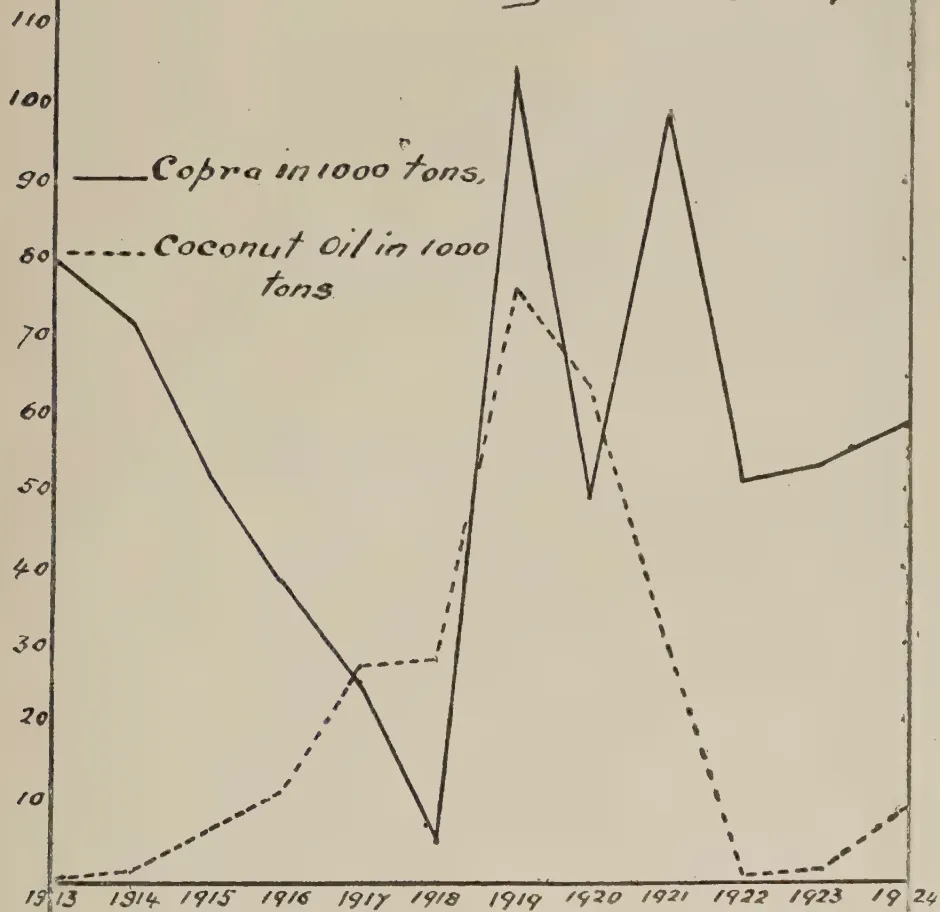
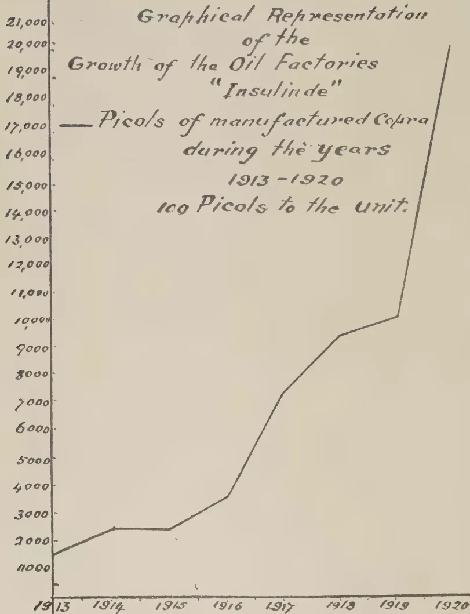
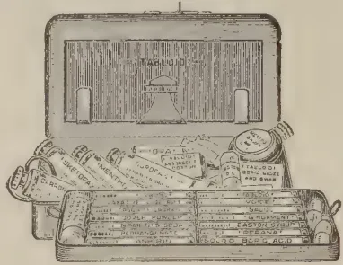

VOL. LXVI.
PERADENIYA, JANUARY, 1926.
No. 1.
For several years the Bunchy Top disease of Plantains has been on the increase in Ceylon and has spread from a relatively small affected area in the Colombo district to most districts in the Island. It has been the subject of investigations and certain recommendations for its control have been made. The investigations made by field officers recently have shown that the disease is general in many parts of the Island but that there are indications that in some places where attacks have been severe the disease now appears to be less virulent and possibly on the decrease.
This disease of plantains is known to occur in Fiji, Australia and Egypt. In Fiji, it caused for a time the complete cessation of a valuable industry, but after a time it was found possible to resuscitate an industry upon a smaller scale. In Queensland it has also caused losses and had become widespread in some districts. In Ceylon, it was first recorded in 1913, at which time it was confined to the Colombo district.
In the present number of the Tropical Agriculturist is given a review by Dr. Gadd on the Bunchy Top disease of plantains in Ceylon, together with reports from Plant Pest Inspectors as to the prevalence of the disease in various parts of the colony at the present time.
The various theories which have been advanced as to the cause of the disease are detailed by Dr. Gadd. Since the preparation of this report, the results of the work of the Investigation Committee in Australia has been made public, and from this
536
2[JANUARY, 1926.it appears that the disease has been found to be a virus disease and transmitted by the dark banana aphid—Pentalonia nigro-nervosa—which is common in that country. This report was made public at the earliest possible moment in order to afford information to Plantain growers and should be of the greatest possible interest to all interested in village agriculture in Ceylon.
For some time the Department of Agriculture has received information that the banana aphid has been suspected of being associated with the disease in Queensland but definite conclusions could not be arrived at until the investigations which were in hand had been completed.
The evidence produced in the report which is reproduced in this present number appears to demonstrate clearly that the Bunchy Top disease of plantains is carried by aphids and it remains to ascertain whether this particular pest is found in Ceylon plantain cultivation or whether under Ceylon conditions other agencies are responsible for the transmission of the disease.
The history of the investigation of the Bunchy Top disease of plantains indicates the complicated nature of many plant diseases and the length of time that investigations may take. This disease has most probably been introduced into Ceylon and therefore it indicates the necessity for the closest possible scrutiny over plant imports.
Import regulations involving inspection, fumigation and disinfection appear to be irksome to importers but it is necessary that they should be strictly enforced if the interest of agriculturists are to be safeguarded. It must not be overlooked, however, that although legislation helps considerably to reduce the introduction of new pests and diseases it cannot prevent the introduction of some, and therefore the appearance of any new pest or disease should be immediately reported to the Department of Agriculture in order that it may be investigated and the earliest infestation promptly dealt with, especially if these are likely to cause damage to crop plants.
JANUARY, 1926.]3A full review of the present situation of the Bunchy Top disease of plantains in Ceylon is herein presented for the information of readers and is followed by the report which has recently been published by the Australian Investigation Committee on the Cause and Nature of the Bunchy Top Disease in Australia.
(A REVIEW.)
BY C. H. GADD, D.Sc.,
Acting Mycologist, Department of Agriculture, Ceylon.
The Bunchy Top disease of Plantains is known in Fiji, Australia and Egypt. In Ceylon it was first recorded in 1913, at which time it was confined to the Colombo district. Since then, however, it has spread extensively and caused great losses to the Plantain industry.
The characters by which the disease is most readily recognised are the dwarfing of the suckers, and the tendency for the leaves to remain close together instead of expanding normally. It is from the latter character that the disease derives its names of Bunchy Top, Cabbage Top and Strangles.
The cause of the disease is still obscure, despite the close observations and experimental investigations carried out by scientific investigators and interested planters in the countries where the disease occurs. Many theories have been advocated at different times to explain the incidence and mode of action of the disease; these have been carefully investigated and in many cases have had to be dismissed as untenable. The elimination of such theories has narrowed down the enquiry considerably, and has concentrated attention on more hopeful lines of research.
Theories have been advanced, which assume that the disease is due to physiological causes, i.e., not due to the attacks of definite organisms, and remedies have accordingly been prescribed. These theories in most cases have proved to be untenable; they are here briefly reviewed.
(a) Degeneration of Stock.—The plantain is propagated vegetatively by means of suckers or corms. The plants of one generation are consequently derived directly from single plants of previous generations without the rejuvenation connected with sexual propagation. As with the potato, this method of propagation is said to result in a loss of vigour and a consequent degeneration, which is demonstrated by disease symptoms. There is no evidence to support this theory and much to disprove it. There is consequently no reason for believing that freshly imported stock from a new source would not be liable to the disease.
4[JANUARY, 1926.(b) Soil Acidity.—It has been demonstrated that the application of lime and basic phosphates to the soil have failed to prevent the disease, and it may be concluded that soil acidity is not a primary factor in promoting the occurrence of the disease.
(c) Climatic Conditions.—It has been impossible to correlate the incidence of the disease with definite climatic conditions.
(d) Absence of Essential Food Materials in the Soil.—After an investigation into the plantain disease in the Bonin Islands, where the disease was very severe in 1913-1915, Hori concluded that the disease was due to a deficiency of potash. He stated that his experimental plot manured with potassium sulphate and stable manure attained the best growth with no sign of disease, and that diseased plants recovered after the application of this manure. Experiments in Ceylon and Australia have not confirmed these conclusions. Diseased plants in Ceylon treated with sulphate of potash and cattle manure have not been observed to respond in the slightest degree.
Manurial experiments have been carried out in New South Wales, but no manure mixture has been found to produce any beneficial results as regards this disease. It is generally agreed that a potash manure is beneficial to plantains, and manuring is recommended, not as a means of prevention of the disease but to ensure a maximum yield while the plants are in bearing.
An examination of bunchy top plants reveals the presence of numerous micro-organisms. Many of these no doubt have gained entrance owing to the lowered vitality of the plant consequent to the development of the disease. General observations lead one to the conclusions, that the disease is caused or is carried by micro-organisms; that the cause of the disease, if due to the attack of micro-organisms, will be found in the root system; and that if the disease is carried by organisms then those organisms normally have a limited range of movement.
The evidence that leads to these conclusions may briefly be summarised. The disease may make its appearance on a number of widely separated plants in the fields, then it is the adjacent plants which are next to be attacked. The disease spreads from one plant to the next or at furthest the next but one. This suggests a root disease such as may be caused by certain fungi or bacteria, the attack of animal organisms such as nematodes, and root-boring larvæ or limited range. Each of these lines of thought have been followed, but so far, nothing very definite has been achieved.
Fungi and Bacteria.—No species of fungus or bacterium has been found constantly associated with the diseased condition, nor has the disease been produced on healthy plants after inoculation with fungi or bacteria from pure culture. A number of fungi, such as species of Rhizoctonia and Fusarium has been suggested, but so far no proof has been obtained. At present, this is, therefore, no definite evidence that the disease is due to either bacteria or fungus attacks; but much further work is required in this direction.
Virus.—Certain diseases, such as Mosaic of potatos, etc., are known to be due to either an enzyme or ultra-microscopic organisms in the sap of diseased plants. Sap from diseased plants even after filtering through the
JANUARY, 1926.]5finest of filters is capable of infecting healthy plants. Such diseases are commonly known as Virus diseases. That the bunchy top disease of plantain may be due to a virus disease is to be considered. If a healthy corm is cut with a steel knife a purplish colour soon appears over the surface of the white tissues; the cut surface of a bunchy top corm develops this colour more slowly. This demonstrates some difference between the saps of healthy and diseased corms. This difference may be due either to the presence of a virus or to a toxin secreted by an organism. There is also a difference to be noted in the texture of the leaves. The leaves of a bunchy top plant are usually very brittle whereas leaves of healthy plantains are not. Bryce carried out experiments to ascertain whether the disease could be induced by injecting filtered sap from bunchy top plants into healthy plants. He was not able, however, to cause the disease. In view of the results obtained from experiments with green fly in Australia, it would appear that this line of investigation is worthy of further research.
Animal Organisms.—Considerable attention has been given to the association of certain animal organisms with this disease. These organisms may be the true causative agents or they may merely be carriers of the disease. If the disease is a virus disease then such sucking insects as green fly (Aphids) would possibly play an important part in transmitting the disease from plant to plant. The disease might similarly be carried by such organisms as beetle larvae, which bore into the underground parts.
(a) Aphids or Green fly.—A claim was made in Australia in 1922 that the cause and cure of bunchy top had been discovered. It transpired that the claim was based on the following assumptions: (1) That bunchy top was due to aphids which attacked the plant; (2) that if no aphids were allowed to attack the plants no bunchy top would develop; (3) that the aphids could be kept in check sufficiently to prevent bunchy top by spraying at intervals with kerosene emulsion. Experiments were carried out to investigate the truth of these assertions. Unfortunately, the statements did not prove to be wholly true, as sprayed plants developed bunchy top. Although spraying with kerosene emulsion and other spray fluids did not prevent the disease, the sprayed plants appeared to derive some little benefit from the treatment. One experiment consisting of two plots each of 100 plants, one sprayed and the other kept as control, 13 months after planting showed 65 bunchy plants in the control plot, and 20 in the treated plot. The banana aphid is usually found between the outer leaf sheaths and the pseudostem, a position very difficult to reach by ordinary spraying methods. Consequently, some doubt must remain as to the efficacy of the treatment, and the banana aphid must still remain under suspicion as a factor in the development or transmission of the disease.
(b) Nematodes.—A disease of plantains in Egypt appears from the description and published illustrations to be the same as the one known here as Bunchy Top. There, a nematode worm, a species of Heterodera, is associated with the disease and is regarded as the cause of the disease. Cobb found on the roots of diseased plantains in Fiji a new species of nematode to which the name Tylenchus similis has been applied. This same nematode was found associated with a disease of sugar-cane in Hawaii, and later was recorded as the cause of a banana disease in Jamaica. The
6[JANUARY, 1926.symptoms of the disease in Jamaica do not agree with those of the bunchy top disease. Nematodes have also been found associated with bunchy top disease in Australia and in Ceylon but these have been regarded as a secondary infestation. The diseases of plantains in Jamaica, Grenada and Australia attributed to Nematodes have symptoms different from Bunchy Top.
(c) Other Insects are occasionally associated with diseased plantains. Some of these, particularly the root-borer beetle (Cosmopolites soridus) may assist in the distribution, but there is no evidence that their attacks are the direct cause of the disease.
Immunity.—No variety of plantain experimented with in Ceylon has proved to be immune to this disease, and no immune variety which has undergone severe tests is recorded from other countries. The disease is reported to have become less prevalent in some districts. This may be the result either of the plants having acquired some degree of immunity or of the disease having lost some degree of virulence. In this connection it is of interest that in Fiji, about 1894, the banana industry was so seriously threatened by this disease that many planters were compelled to abandon their plantations. In 1906 the disease is reported to be found here and there but no great loss is put down to it. In subsequent years the disease has occurred in varying degrees of severity at irregular intervals, but its attacks are not as severe as those occurring in the nineties. In the report for the year 1924 the disease is regarded as one of the minor ailments of the banana.
If the reports of the decreased virulence of the disease in some districts of Ceylon be true then it would appear that the disease in Ceylon is following much the same course as it did in Fiji. A diminution of the virility of a disease in the entire absence of immunity is difficult to prove. The easier explanation is that the plants are attaining some degree of immunity due to unconscious selection or to the principle of "the survival of the fittest" operating with the continued attempts to cultivate plantains under adverse conditions. In the ordinary course the most susceptible strains are killed outright and suckers for further planting must consequently be taken from less susceptible strains. This selection has to a large extent been subconscious in Ceylon, but the results must be somewhat similar to those obtained through conscious selection.
Experiments on the immunity of plantains have been carried out in Fiji with interesting and important results. In the Annual Report for 1912, is stated: "It was found that plants which show the disease in the young stage sometimes overcome it and develop in a normal manner. To test the matter properly, suckers were taken from stools showing well-marked signs of the disease and planted in a plot apart from all other bananas. Sometimes they grew, and those that failed were replaced. In this way 8 plants are growing out of 45, some of which were planted many times. Of the 8 plants, three have fruited giving normal branches. When this happens, a sucker is taken and planted in a line with its parents, and when the sucker fruits, another will be planted still in the same row, and so on ..... So far, none of the plants which have grown have shown signs of the disease." These experiments appear to have been started in 1910. In
JANUARY, 1926.]71916, the report states. "No disease has so far appeared." No mention is made of the Experiment in the Report for 1917. In that report the following passage occurs under the heading 'Banana Experiments' (p. 3) "A planting of diseased banana bulbs was made in newly cleaned land in February and produced apparently healthy plants. They started to fruit in December. The plot has been moved and planted in accordance with the scheme arranged by the Experimental Committee." The Report for 1918 states: "It has been found that a plant showing unmistakable signs of the disease when separated from its stool and planted can develop in a normal manner. An old plot contained 98 such apparently healthy plants. They were removed to a new plot in January 1918. Seventeen developed the disease but 6 subsequently recovered." Unfortunately, there is some doubt as to what "old plot" is referred to here. Is it the planting referred to in the report for 1917, or is it the plot established earlier? In any case it would appear that plants may be apparently immune in one area but become susceptible when removed to another. If the plot referred to is the 1917 planting, very little importance can be attached to this conclusion as the plants had not been long enough under observation to determine whether they were really immune. On the other hand, if the plot consisted of plants which had remained free from disease for a number of years, then the development of the disease on transplanting to a new area become of considerable importance as it would indicate that the soil is an important factor in determining the degree of immunity.
It will be realised that selection work such as was carried out in Fiji depends upon the recovery of diseased suckers and their ability to form healthy clumps. In this connection it is reported from Australia "A bunchy top plant will frequently throw suckers which remain healthy in appearance for a considerable time. Nevertheless, if removed and planted they invariably turn bunchy top eventually." General observations in Ceylon support the Australian view but extensive plantings of diseased corms have not been carried out here to definitely determine this point.
The Fijian experiments have been dealt with at some length as they appear to have been overlooked, although the observations contained in them may be of some considerable economic importance. They do lend weight to the idea that it may be possible, by selection, to develop strains of Plantain which are to some appreciable extent immune to the disease, and that it is possible that this improved condition in districts which are now less severely attacked than formerly may due to selection, though this may have been carried out unconsciously.
Distribution.—The part that organisms may play in the distribution of the disease has been indicated, but the principal means by which the disease has been carried from one district to another is by means of suckers. There can be little doubt that the removal of corms from fields in which the disease occurs into other fields and other districts has been the principal means by which this disease has been spread. The disease has probably also been spread on implements, boots and the hoofs of cattle, as there is some evidence that soil becomes infected.
Treatment.—Methods for the prevention and cure of a disease must depend to a large extent upon the cause of the disease. As the causation of bunchy top is not known at present it is impossible to devise a direct
8[JANUARY, 1926.method of treatment. Petch, in 1913, advocated the destruction by fire of all diseased plants and their suckers, the cultivation of other crops for some years on infected lands and the avoidance of suckers for planting from the Colombo District, where only at that time it occurred in Ceylon. Such treatment then might have been possible, but to-day it is impracticable as it would mean the cessation of plantain cultivation in most districts for a few years. The eradication of the disease by such methods would require the whole-hearted support of all growers, and under present conditions that could not be obtained. Total eradication is now out of the question until at least the cause of the disease can be ascertained.
The following measures are at present recommended:—
(a) Do not use suckers from districts where the disease occurs, to plant up new land. Healthy suckers from healthy clumps alone should be used for planting. Districts in which the disease does not occur should avoid suckers of any description from districts where the disease does occur.
(b) A diseased plant as soon as it is noticed should be dug out and burnt. If burning is impossible the diseased plant should be cut up so that it will dry more readily in the sun. It is the opinion of planters in Australia, that this practice of destroying diseased plants as soon as they are noticed, stays the onset of the disease sufficiently to give them one bunch of fruit more than where it is not adopted.
(c) Where land becomes unprofitable for plantain cultivation other crops should be grown for 3 or 4 years, before replanting with healthy suckers. Whether this period of time is sufficient for the infective agent in the soil to die out is not known, and the period cannot be accurately determined without some knowledge of the causative agent. But 3 or 4 years appears to be a suitable period for trial.
(d) A separate set of agricultural implements should be kept for cutting out diseased plants. The object is to avoid as far as possible the carrying of infectious material to healthy plants on implements.
(e) Manuring should be liberal to maintain the vigour of the plants as long as possible, and to ensure obtaining the maximum crop while the plants are bearing.
The use of potash manures, lime and sulphur have not proved successful in preventing the disease. The preliminary treatment of suckers with antiseptic preparations before planting has not given the desired results; and the sterilization of soil by antiseptics cannot at present be recommended owing to the cost of treatment and the uncertainty that benefit will be obtained from that treatment.
The information embodied in this report has been obtained from published observations and investigations made in the countries in which the bunchy top disease of plantains is known. A list of the literature consulted is attached.
JANUARY, 1926.]19LITERATURE.Auchinleck, G. G., and Crispyn, C. P.—Year-Book, Dept. Agric., Ceylon, 1925, pp. 33-36.
Bryce, G., Dept. Agric., Ceylon, Leaflet No. 18 (1921).
Campbell, J. G. C., Agric. Circ., Fiji., Vol. V, No. 2, p. 70
Cobb, N. A., Journ. Agric. Res., IV, pp. 561-568
Darnell-Smith, G. P., Agric. Gazette of N. S. W., XXX, pp. 809-814. (1919).
Darnell-Smith, G. P., Agric. Gazette of N. S. W., XXXI, pp. 583-4 (1920)
Darnell-Smith, G. P., Queensland Agric. Journ., XXI, pp. 169-179 (1924)
Darnell-Smith, G. P., and Tryon, H., Queensland Agric. Journ., XIX (1923) pp. 32-33.
Fahmy T., Min. Agric. Egypt, Tech. and Sci. Service Bull., 30 (1924)
Gadd, C. H., Year-Book, Dept. Agric. Ceylon, 1925 pp. 36-37
Hori, S., Horticulturists' Friend, XIV Nos. 9-11, 1918 (Japanese).
Illingworth, J. F., Queensland Agric. Journ., XIV pp. 297-301 (1920).
Knowles, C. H., and Jepson, F. P., Dept. Agric., Fiji, Bull., 4 (1912).
Legislative Council, Fiji, Council Paper No. 23, 1906; C. P. No. 13 1907; C. P. No. 27, 1910; C. P. No. 23, 1911; C. P. No. 34, 1912; C. P. No. 28, 1913; C. P. No. 45, 1914; C. P. No. 24, 1915; C. P. No. 29, 1916; C. P. No. 107, 1917; C. P. No. 60, 1918; C. P. No. 32, 1919.
Nowell, W., West Indian Bulletin XVII, pp. 177-179 (1919).
Petch, T., T. A. XLI, pp. 427-429 (1913).
—September, 29th 1925.
The following reports from Officers of the Department regarding the incidence of Bunchy Top disease throughout Ceylon have recently been received :
Udunuwara.—Cultivation—Kitchen garden crop. Disease not to such an extent as it used to be. On the decrease.
Yatinuwara.—Cultivation recommended on old plantations. Disease has not appeared on these new plantations.
Tumpane.—Largely cultivated. Disease was very bad, but from the beginning of this year no disease prevalent.
Harispattu.—Tumpane remarks apply to this division. No signs of disease.
Pata Dumbara.—Cultivation moderate. Disease on the decline.
Uda Dumbara.—Same as Pata Dumbara.
Pata Hewaheta.—Same as Pata Dumbara.
Uda Palata.—Kitchen garden crop. Disease on the decrease.
Uda Bulatgama.—Same as Uda Palata.
10[JANUARY, 1926.Matale South.—Disease throughout the area. Cultivation semi-abandoned.
Matale East.—Prevalent in all gardens. Cultivation general.
Matale North.—More or less free from disease except at Pallepola. Cultivation throughout all villages.
Kotmale.—Cultivation restarted. Disease dying out.
Uda Hewahela.—Disease dying out. Considerable cultivation successfully restarted.
Walapane.—Cultivation practically extinct. Being encouraged again by introduction of fresh plants. Disease still prevailing.
Galboda, Kimigoda, Paranakuru and Beligal Korales.—Extensively cultivated. Plantains very badly affected in the area of Rambukkana and Alawwa, otherwise disease on the decrease.
Dehigampal Korale.—Very serious in the past. Cultivation now taking place. Disease present but decreasing slightly.
Atulugam, Panaval and Lower Bulatgam Korale.—Same as Dehigampal Korale.
Kalutara District.—The plantains are not cultivated on any large scale. Small holders understand the seriousness of the disease, and are taking steps to prevent and eradicate disease; but are discouraged over cultivation of this crop.
Varieties.—Sweet varieties and Ash plantains most susceptible; Embul Hondaravalu least so.
Prevalence.—Disease is on the decrease due to—
Galle District.—The cultivation is mostly restricted to small gardens attached to households, and on these disease is negligible.
On few estates Plantains have been used as catch crops on new clearings. These became diseased to an alarming extent and have been abandoned with growth of permanent crop.
Prevalence.—Villagers say that cultivation of this crop has been given up due to prevalence of this disease in previous years and no large areas have therefore been opened up. Consequently the disease is "dying out" for want of host rather than "decreasing."
Prevalence.—In Matara District prevalent throughout.
In Giruwa Pattus less prevalent. Round Tangalle, Beliatta, Walas-mulla, disease was rare in March, 1924, but slight increase is seen this year.
In Magam Pattu disease less prevalent than in the Giruwa Pattu. More plantains grown here than in the other two Pattus. Round Tissa-maharama plantains are grown more profitably, and the disease is very rare.
JANUARY, 1926.]11Varieties.—Embul Hondaravalu is the chief variety grown, and other varieties are Rata Hondaravalu, Alukehel, Kitala, Suwandel, Anamalu, Mondan and the Puvalu or the Kolikuttu. Last mentioned variety was seen to be the most susceptible.
In Galle District cultivation limited to a few trees, in household gardens and these free of disease.
In Kalutara District cultivation on small scale only, no replanting of infected areas, and general falling away of cultivation
In Matara District prevalent throughout
In Hambantota District. Less prevalent in Giruwa Pattus, least so in Magam Pattu. Most profitable cultivation of plantains in this Pattu and round Tissamaharama, disease being rare.
Kopay, Neervaly Urumpiray and Punnalaikadduvan.—Isolated cases of damage by plantain weevils as well as by other diseases known in the vernacular as "Karunthadi" and Kuruthadayal have been observed in plantations which have been allowed to run on for several years and which were full of decaying stems and leaves and in a neglected condition.
In new plantations the plants were hardly damaged by any disease
Jaffna Maniagar's Division.—There are many isolated cases. The disease has not made its appearance in the Experiment Station, Jaffna.
Not seen in this District
Not in this District.
Unknown in this District.
The disease is present in :—
Dambadeni Hat Pattu.
Udapola Medalassa Korale;
Rekopattu Korale
Udapola Otota Korale West, in all 7 palatas
Udukaha Korale South, in all 7 palatas
Udukaha Korale West.—Metiyagane, Weuda, Paranagama
Udukaha Korale East.—Galataru, Walakumbura, Tatigaloluwa,
Hangawatta, Hedipannala, Midelladeniya, Poramadella, Waduwawa, Lewdeniya, Naranpola, Pannala, Damunupola, Dehelgamuwa, Udumulla.
Udapola Otota korale East.—Yogomuwakande, Polpitiya, Wellewa,
Kurundugolla, Panaliya, Godigamuwa, Galbadagama, Aragoda
Udakaha Korale North.—Nammala, Nagahagedara, Dalupothagama, Ranawatta, Aachirigama, Halwella, Polwattegedera, Weragala, Dampelessa Kiwulegedera, Rammutugala
12JANUARY, 1926.Údapola Otota East.—Kowulwewa, Etanpola, Ratneheruwa, Yakkannehera, Pottewela, Wisiriyanwela, Wewagama
Weudawilli Hat Pattu.
Gannewa Korale
Gandaha Korale
Tiragama Korale
Bogamuwa
Atamune
Hiriyala Hat Pattu.
Ragedara
Kadiyawa
Kalugampola Hat Pattu.
Medapattu West Korale, all villages
Barigoda Palata
Nakkawatta Palata
Kuliyapitiya Town
Bammana
Sembate, 8 miles from Puttalam, and Puttalam.
The following is the report of the Investigation Committee of the Bunchy Top Control Board of the Government of the Commonwealth of Australia as published in the Queensland Agricultural Journal for November, 1925:
The Bunchy Top Control Board, consisting of Sir George Knibbs (representing the Commonwealth Government), Mr. G. Valder (Under Secretary for Agriculture, New South Wales), and Mr. E. Graham (Under Secretary for Agriculture and Stock, Queensland), has received from the Supervisor of the Bunchy Top Investigation (Dr. Goddard) this valuable Report dealing with Bunchy Top disease. The Investigation Committee consisting of Professor E. J. Goddard, D.Sc., M.A. (Supervisor), Mr. C. J. P. Magee, B.Sc. Agr., Assistant Plant Pathologist), and Mr. H. Collard (Horticulturist), considers that the time has now arrived when, in the interests of banana-growers, a definite statement should be made as to the cause of Bunchy Top disease in bananas, and at least preliminary suggestions put forward as to the means of combating the disease. The subject of report, as widely recognised, is one of first importance to the industry, and the results of the investigation as set out hereunder will be welcomed by banana-growers throughout the State.
It has been definitely proved that Bunchy Top in bananas is a disease transmitted by the common dark banana aphid—Pentalonia nigrinervosa. The intimate association of these insects with the disease was proved by
JANUARY, 1926.]13observational and experimental work as early as January and February of the present year, but it was considered not to be in the interest of the investigation or of the banana-grower that any official statement should be made earlier than at the present time. It is very easy to form opinions as to the nature of such a disease, but the scientific investigator concerned with such a disease as Bunchy Top, on which much effort has been expended in various parts of the world, must prove his statements to the hilt, and any official communication should be as complete as possible. The preliminary evidence of the experimental transmission of the disease by means of aphides was obtained in January and February of this year at the Laboratory, Tweed Heads, and at the Queensland University, but it was necessary that these experiments should be confirmed under glasshouse conditions—which were available only in April, 1925. Growth of the plants under winter conditions had delayed the suitable time for experiments, but now the final proof is available. The evidence in support of this statement is briefly as follows:—Forty healthy plants from Bribie Island, free from any insects, were planted in tubs in the glasshouse—twenty in each half of the glasshouse, which is divided by a wall into two insect-proof sections. In the case of one set of twenty plants aphides from effected plants were transferred to the individual plants, and of these every plant has now developed the symptoms of Bunchy Top within a period of less than one month since the transference of the aphides. It is noteworthy that not one of the other set of twenty plants has developed any signs of Bunchy Top. This final proof of the transmission of the disease has become available only during the past week.
The foregoing remarks should serve alone to justify the delay in the official publication of the discoveries made by the investigation. These results, we are aware, have become more or less known unofficially throughout the affected area, but there are further very definite reasons why no official blessing has been given to statements which have made their way into the Press. It is one of the main objects of such an investigation to proceed further even than elucidating that a certain insect transmits the disease, and to elaborate some means of controlling the disease. In facing such a problem we have been concerned with determining whether the disease can be transmitted by any other insect, and whether the disease can be transmitted from banana plants to other species of plants, such as hemp, canna, &c., by aphides or other insects. All these facts have a bearing on the possible methods of control of the disease.
The evidence now available justifies us in regarding the disease as a virus disease transmitted, at least, by the dark banana aphid—Pentalonia nigrinervosa. In some virus diseases there is a marked effect in the phloem—that part of the plant which serves for the transference of food material from the leaves to the other parts of the plant. Detailed examination of this part of plants affected with Bunchy Top, as well as of associated tissues has revealed a most interesting and unique pathological condition, the details of which will be of much interest to the scientific world when they have been described in scientific language. It is unnecessary to discuss these
14[JANUARY, 1926.]changes at this stage beyond stating that the representatives of vessels known as sieve tubes, serving normally for the transportation of food material, have undergone a peculiar alteration in certain regions of the phloem of the leaves of affected plants. This condition has bearing in some interesting way on the broken green streaks so characteristic of affected plants, and serving for the early detection of the disease. Perhaps the most significant aspect of these conditions in the phloem is the corroborative evidence they lend to the interpretation that Bunchy Top is a virus disease—that is, a disease due to an ultra-microscopic organism.
We have definite evidence that Bunchy Top is transmitted by the banana aphid—Pentalonia nigrinervosa. As this species of aphid is widespread in banana plantations of Northern Queensland, where as yet no Bunchy Top has been reported, there is reason to believe that in Northern New South Wales and South-Eastern Queensland this insect is carrying some factor which induces the disease. Reasoning by analogy and taking as an instance other aphid-transmitted diseases, such as some of the degeneration diseases of the common potato, it would seem that Bunchy Top falls in the category of so-called virus diseases. This class includes those transmissible or infectious diseases which are perpetuated indefinitely by vegetative growth and reproduction, and of which no cause has yet been identified and demonstrated—except in the recent cancer investigations, where specially improvised apparatus was used. The name "virus" is the name given to this "unknown" cause. The virus, which by some pathologists is supposed to be of the nature of an ultra-microscopic organism, seems to be associated with the plant juice or sap. This class of disease can in many cases be quite readily transmitted from diseased to healthy individuals by direct inoculation of sap. In the case of other virus diseases, it is necessary that the inoculum be introduced into a particular region of the vascular system of the plant. There are some virus diseases which are transmitted only by means of aphides and by grafting, and in the case of these it has been shown that the aphid inserts the proboscis into the region of the phloem. Bunchy Top would appear to belong to this latter group.
It would be premature to conclude definitely that the disease cannot be transmitted by direct inoculation of sap, but the early out-of-doors experiments made in 1924, and more recent experiments made with sap inoculation in the glasshouse at the same time as the successful experiments with aphid-infection, have as yet failed to give results. The excessive development of chlorophyllous tissue, together with the dwarfing of the plant and rosetting of the leaves support the idea of the virus nature of the disease. The absence of symptoms from foliage that has attained full growth before the introduction of the virus is also a characteristic of these infectious diseases. In the case of Bunchy Top plants, the first symptom of the disease is the appearance of broken dark-green streaks along the secondary veins of the leaf blade. This symptom does not later appear in leaves which were thrown earlier and had attained maturity. Further evidence is the fact that eyes removed from a rank Bunchy Top stool, surface-sterilised and planted in sterilised soil under glasshouse conditions, have in all cases produced Bunchy Top plants. Internal examination of such eyes reveals no organism, under microscopic or cultural tests, on which suspicion could lie.
JANUARY, 1926.]15CAUSE OF DISEASE DEFINITELY ESTABLISHED.It should be stated that among the various theories which were previously put forward to explain the cause of Bunchy Top, there was that which postulated that aphides were the cause of the disease. This theory was put forward by Mr. J. Marks, of Terranora, in 1922, and has had some following on the part of other planters in various parts of the affected areas. The position in this respect, when the present Investigation Committee undertook duties, was that nothing had been proved or disproved, and an open mind was displayed in respect to this and the other theories as to the cause of the disease. It can now be definitely stated that the cause of the disease is no longer a matter of opinion, and that its nature has been definitely established.
CONTROL MEASURES.A knowledge of the nature of the disease and its mode of distribution enables us at this stage to make definite recommendations to growers in lightly affected areas; and the value of such has been to some extent attested in the field. It is to be understood, however, that there still remains ahead of the Investigation Committee a considerable amount of work involving the elucidation of certain aspects which may have an important bearing on the matter of control. As examples of such we might refer to the necessity for a knowledge of—
Progress is being made in the investigation of such, but it is quite premature to attempt at this stage to lay down final recommendations applicable to the entire affected area. It is for the reason that we feel that valuable recommendations can be made for the lightly affected areas, and that certain unjustifiable semi-official statements have recently been made in the Press, that an attempt is here made to set out the exact position in the present state of our knowledge.
The disease is spread by the transference of affected suckers and by means of aphides. The carriage of the disease to new or lightly affected areas can be largely avoided by the elimination of the first method by growers, who should understand that any plantation which has ever developed the disease in any part is to be regarded as dangerous in practice. The distribution of the disease by means of aphides is facilitated by the presence of one or a few affected plants in a plantation and by the proximity of affected plantations. Winds may assist the aphides to traverse fairly wide zones, but we feel that the adoption of the following recommendations will enable growers in lightly affected areas to combat the disease by making conscientious efforts to cope with the methods of natural distribution.
16[JANUARY, 1926.(1) Secure suckers only from areas in which Bunchy Top has not yet been recorded. Such areas are available only in Queensland, some distance north of the Brisbane River. No reliance should be placed on any apparently healthy plants in any plantations in which Bunchy Top has ever appeared, as it may happen that the disease may be about to develop in such.
(2) Carry out at least a weekly examination of each plant in each stool, paying careful attention to the last leaf in each plant, and observing whether there is any trace of the characteristic broken dark streaks in the leaf blade. A definite day at least each week should be set aside for this purpose.
(3) Do not plant out more suckers than can be satisfactorily dealt with in such a weekly inspection.
(4) Deal at once with any affected stool as follows :—
(a) Spray the whole stool thoroughly, as well as the surrounding soil, with Black Leaf 40, in order to kill any aphides present.
(b) Dig out the stool complete, even if only part is affected, and cut all parts of the plants into slices with a cane knife or suitable implement. (There is no necessity, nor is it advisable, to carry away such material, which can be left to die in the plantation. A very conscientious grower might well give an additional spraying to the cut-up material.)
(5) We would most strongly dissuade growers from following the advice rendered by sellers of certain poisons, whose value, as advertised, consists in the fact that they kill off only those parts of a stool which have been treated. As in most cases most followers will develop the disease, this method is really aiding the distribution of the disease.
Success in fighting the disease lies in the earliest detection of diseased stools and their immediate destruction. It is appreciated that there is in many plantations a great difficulty in removing stools by digging-out, owing to the presence of boulders. In such cases it would be excusable to cut down the stools after spraying them, and then to poison each individual plant. For such poisoning the butt of each individual plant could be treated with kerosene, until such time as a specific and cheap poison can be recommended by the Investigation Committee. Poisoning should not be reverted to unless digging-out is an impossibility.
(6) Growers should encourage their neighbours to follow the above procedure as diligently as themselves, since without such help every assistance is being rendered towards gradually transforming areas now lightly affected into heavily affected areas.
(7) As information is not yet available as to the number of generations of the aphides through which the virus can persist, and the aphides are to be found in abundance in the soil, growers cannot be recommended to plant suckers in holes from which affected stools have been removed. It is premature to make definite suggestions at this stage as to any effective means of treating such holes to the extent of ensuring safe planting in them.
(8) There are good cultural reasons why banana plants should be set out in rows 12 feet by 12 feet, and the adoption of this method of planting should offer at least some advantage in possibly withdrawing one means of ready distribution of aphides.
JANUARY, 1926.]17While the Investigation Committee feels that there are ready means of keeping the disease under control in lightly affected areas, the case is otherwise in heavily affected areas.
It will be appreciated that in combating Bunchy Top, two lines of attack are suggested—
Of these two the most satisfactory would be the complete removal of the source of inoculum, and it is because this is practicable in lightly affected areas that it is possible to suggest definite recommendations as outlined above. This is not immediately practicable in the heavily affected areas, where there are so many deserted and heavily affected plantations in close proximity. This condition directs attention to the possibilities of dealing with the aphides. There are certain plantations where it is alleged that control is, at least, effected by spraying with Black Leaf 40. The Investigation Committee is not in a position to substantiate this conclusion at this stage, but final judgment on the matter should be rendered in the final report of the Investigation Committee, which should be available about the end of the present year.
A very considerable amount of time has been devoted to spraying and dusting on the experimental plots at Cobaki, but we do not look forward with great optimism to this as a practical method of control at this stage. However, final judgment is withheld for the present.
Some partial control by means of spraying would appear to be suggested in the experiments conducted by Mr. J. Marks at Terranora in 1922 with kerosene emulsion, and the experiments which are being carried out by Mr. H. Legg at Upper Burringbar with Black Leaf 40, but it cannot be emphasised too strongly that we cannot recommend this as a practical control measure in areas where the supply of virus is so readily available in deserted plantations.
While recognising that isolation may play its part, and that growers differ so much in respect of thoroughness, the Investigation Committee would at the present stage dissuade growers from planting bananas within heavily affected areas. Further discussion of this matter must be left over to the final report, as it would be premature in the present state of our knowledge to express any further opinions in this connection.
Lastly, in view of the fact that Queensland, north of the Brisbane River (with the exception of Brookfield), has so far escaped the disease and as along the Richmond River in New South Wales there are many localities free, or practically free, from the disease, the transportation of suckers to any of these areas from the affected zone should be effectively prohibited. Regulations in this connection do exist in Queensland, but no harm can accrue from emphasising the absolute necessity for the observance of the regulation.
18[JANUARY, 1926.It may be stated that the committee holds out little hope of any success in the attempt to secure resistant plants. A number of carefully selected plants were brought from Fiji, but most of them had to be destroyed owing to the presence of beetle borer. Eyes from some have been planted at St. Helena, but this experiment is now viewed with general interest rather than with any anticipation as to the economic possibilities. Our experience with apparently resistant plants within the affected area offers no prospects of conquering the disease along the line of resistant stock. The same criticism applies to the consideration of any variety other than the Cavan-dish banana.
The Investigation Committee, consisting of Professor E. J. Goddard (Supervisor), Mr. C. J. Magee, B.Sc., Agr. (Assistant Plant Pathologist), and Mr. H. Goddard (Horticulturist), undertook the responsibilities of the investigation of Bunchy Top in May, 1924, on the recommendation of a commission which represented the Commonwealth Government and the New South Wales and Queensland Governments.
A considerable amount of work had previously been devoted to the problem by scientific workers in Australia as well as in Fiji—where the disease had been present for practically forty years—Philippines, Ceylon, and Egypt, but no definite cause could be proved. Certainly it had been suggested by some that the disease was caused by eel-worms—in Fiji, Philippines, Queensland and Egypt—while various others had suggested that the causal agent was a fungus, chemical deficiency of the soil, deterioration of the banana stock, climatic factors, aphids, &c. There was no substantive evidence to strengthen the claims of these opinions, and as the ravages of the disease along the Northern Rivers of New South Wales and in South-Eastern Queensland were so intense, it became clear that any attempt to solve the problem would have to be made by scientific investigators working on the spot. Only in this way would it be possible to determine the actual cause. The Investigation Committee determine to keep the question quite open and to refuse to eliminate any suggested probability or to refuse to consider any probable cause which might arise, unless conclusive evidence compelled.
A laboratory was founded at Tweed Heads, and experimental plots were leased at Cobaki from Messrs. T. Pilgrim and McAlister. The investigation work at the laboratory was attended to by Mr. C. J. Magee, and the horticultural work at the plots were under the care of Mr. H. Collard. In the interval, awaiting the planting season, Mr. Collard was sent to Fiji to gather first-hand information as to the history of the disease in those Islands, its present status, and the possibility of securing resistant or immune stock.
Attempts to isolate any constant fungal or bacterial agent from the various parts of affected plants were unsuccessful, and after a period of six months, during which visits were constantly made to various parts of the affected area, noting the behaviour of plants in deserted plantations as well
JANUARY, 1926.]19as the initial and early stages of infestation in other plantations, it seemed highly probable, in view of discoveries mentioned later, that the trouble would not be attributed to any such agent. Nevertheless, further work was anticipated along pathological lines, since some causal agents—e.g., bacteria—are very refractory and do not readily respond to cultural experiments. The details of the pathological procedure will find their place in a complete final and scientific report.
Meanwhile the investigation was also devoting attention to the matter of nematodes or eel-worms, since these were found to be abundant in all plantations, and their presence readily indicated by the almost constant presence of galls on the roots of affected and apparently non-affected plants. Plants from Northern Queensland were planted in tanks filled with steam-sterilised soil at the laboratory with a view to settling the possible effect of soil factors—e.g., nematodes, parasitic fungi, and bacteria—in a purely preliminary manner. It soon became apparent that such experiments, if they were to be of any scientific value, would have to be carried out under such conditions of control as obtain in a properly equipped glass house. This development and the necessity for such a glass house for the purposes of other experiments which were to be tried out, compelled the supervisor to request the erection of such a glass house; the cost of the erection of this building was considered to be insignificant for scientific purposes where the national loss due to the disease was so great.
The investigation had for some time been desirous of enclosing plants in muslin or cheese-cloth nets, with a view to conducting preliminary experiments as to the transmission of the disease by insects to healthy plants grown in sterilised soil, but there was reason to believe that for outdoor work in this area such nets would not be successful on account of violent winds. Such experimental work was delayed largely by the determination to postpone the same at that stage until a glass house was available.
Keeping in view the possibility that the disease might be of the Mosaic type of virus disease attempts were made to produce the disease in healthy plants from Northern Queensland grown in sterilised soil, and inoculated with the sap of affected plants. There was no evidence manifested for the transmission of the disease in the material used in these preliminary experiments, but it was recognised that further work along these lines should be carried out when the glass house was available. Similarly, no results were obtained by inoculating sterilised soil with three species of fungi which were isolated from the roots of some specimens of plants affected with Bunchy Top. Further the association over a long period of diseased and healthy plants in sterilised soil and in the same pot, out-of-doors, so that the roots were in intimate association, failed to produce the disease in the healthy plant (an experiment which has since been repeated with several plants under glass house conditions with the same results). Meanwhile considerable work was accomplished on the experimental plots.
One of these with excellent soil had previously been affected with Bunchy Top, and after being leased has been thoroughly ploughed (part of it had rested for a period of several months) prior to the planting of the same by the Investigation Committee in October, 1924. The plants were selected from various areas—some were plants which appeared to have stood out
20[JANUARY, 1926.against the disease in affected plantations, some which appeared to have shown some signs of healthy constitution taken from a deserted plantation, healthy plants from Bribie Island and Bracalba (Queensland,) and three species of wild bananas from the neighbourhood of Cairns. The objects in this experiment were to determine the possibilities of resistance in local stocks, the possibilities of recovery from the disease, to make an intensive study of the incidence of the disease in originally undoubtedly healthy plants, and to determine the possible effects of cultural treatment in upholding resistance in healthy plants, and the possible resistance of wild stock to the disease.
Another plot on virgin land which had grown lantana for eight years was cleared and planted with healthy stock from Bracalba. It was considered that, if soil factors such as physical and chemical constitution, bacteria, fungi, or nematodes played the major role in the direct production of the disease, it was possible that the plants on the plot of virgin land would stand out in contrast to those on the other plot which had carried Bunchy Top plants.
The early outbreak of disease in the plot of virgin land in January, 1925, and its rapid development throughout that plot within a few weeks, contrasted with the very slight development of the disease on the other plot, came as a surprise, and led to an intensive study of the conditions prevailing in this plot. It was noticed that aphides were particularly abundant on this plot, an abundance possibly to be attributed to the topography of this lower plot being responsible for the bringing about of conditions more favourable for the aphides.
At once aphides were transferred from affected plants to healthy plants in sterilised soil placed under nets in the grounds of the laboratory, and the disease made its appearance in these experimental plants in about three weeks. The experiments were repeated by transferring aphides from affected to healthy Bracalba plants grown under nets in the University grounds at Brisbane, where the disease appeared in several plants in twelve days. Thus a definite lead was established to the investigation, and at once preparations made for following up these results in the glass house, arrangements for the construction of which had then been completed. The success of the later experiments has been set out above. The Supervisor welcomes the opportunity of stating that the results obtained are largely due to the outstanding ability and enthusiasm of the Assistant Plant Pathologist, Mr. Magee, and the keenness, diligence, and practical ability of the Horticulturist, Mr. H. Collard. To them he owes everything in the accomplishment of that portion of the task now completed.
Wilting of tomatos has been quite common, and there are apparently several forms here. The root from "Fusarium" of the nature of Panama Disease of Bananas, is caused by a fungus in the soil, and is not amenable to any treatment of the soil by spraying. The Tomato Blight form can be prevented by spraying with Bordeaux Mixture or Burgundy Mixture when the plants are young and several times thereafter.—The Journal of the Jamaica Agricultural Society, Vol. XXIX, No. 6.
JANUARY, 1926.]21At the request of the Low-country Products Association a report has been secured from the Department of Agriculture, Industry and Commerce, Java, on the Coconut Oil Industry of that country. This report has been translated and has been submitted to the Estates Products Committee of the Board of Agriculture for its information.
Only after the year 1907 did the oil industry in Java really develop. Before that time almost all the coconut oil was produced by the indigenous population by the very primitive methods which had been in use for centuries.
Before tracing the development of the oil industry to its modern manufacturing status it may perhaps be interesting to describe this method which is, even at the present time, employed. The great economic importance of this primitive home industry is quite apparent from the fact that the major portion of the oil consumed by a population of about 35 millions is yet prepared in this simple manner, so that, roughly 80 per cent. of the total coconut product of Java is manufactured in this way.
In the indigenous method of manufacture, unlike the modern European industry which employs only copra, the fresh kernel of the coconut is used. The kernel is grated finely by hand and the grated meat is put into a plaited bamboo basket which is placed in a wooden trough. The mass of grated coconut kernel is then mixed with warm water and kneaded by hand or by treading under foot. The milky fluid (an emulsion of oil in proteinaceous water) passes out through the plaiting of the basket. This accumulates in the trough and is then transferred into larger earthenware vessels. The liquid is allowed to remain for some time in the vessels. Here it settles into two layers, the upper of which has a thin pulpy consistency and contains nearly all the oil, whilst the lower layer is made up of the water.
The upper layer is now decanted and evaporated in iron pans. On heating, the oil separates from the water, whilst the proteins contained in the kernel are precipitated. When the water has been evaporated, the oil is strained through a gunny in order to free it from the sediment. This sediment is again pressed for procuring the last remnants of oil in it. This last operation is carried out in very primitive wooden presses in which pressure is brought to bear on the meal by means of a wedge that is driven in with a hammer. The cake that is left behind is a valuable by-product and is used as food.
The following data gathered from various districts in which oil is prepared by the indigenous population in the manner described above give an idea of the results obtained. It may be taken that, on an average, from
22[JANUARY, 1926.300 ripe coconuts about litres of oil are obtained, which amounts to a yield of about 50 per cent. reckoned on copra.
The year 1907 has been mentioned above as being of importance in the history of the development of the oil industry in Java. In that year two oil factories were erected by the "Maatschappij van Heel" in the district of Kediri. These have really been the beginning of an oil industry which developed extraordinarily within a few years. With modest beginnings and even working according to the primitive indigenous methods, the company, encouraged by satisfactory results, set about extending the industry, which was modernised, and provided with the first hydraulic press imported into Java. This press was of the Seier type. As a result, the capacity for production was considerably augmented and the cost of production per unit was considerably lowered. One of the advantages of the increased capacity for production was that foreign orders for oil could be executed more speedily and opportunities of favourable situations in the market taken advantage of.
These factories worked successfully, and following them, several others belonging to, and carried on by Chinese were erected. All these worked exclusively for the inland market. The relatively low capacity of the new factories did not permit of their exporting oil.
In 1913 there came a change when both the oil factories of the "Maatschappij van Heel" referred to above came into the possession of a newly formed company, the R. V. "Oliefabrieken Insulinde." From the beginning this company included within its scope, the provision of inland demand as well as the exporting of oil. Immediately after the purchase of the two factories, the company effected improvements in order to increase their capacity for production. The same year (1913) saw the origin of another company, namely, the "Oliefabrieken van Dongen" which is the only large concern in this district. This company yet exists and did not collapse as the result of the wide-spread economic crisis after the War.
When the great European War broke out in 1914 there was a great stimulus to the further growth of the oil industry in Java, Germany, the greatest purchaser of Java copra and the greatest oil producing country of the continent, was almost immediately cut out of the world's economic system. Yet, at the beginning of the War, considerable quantities of Java copra found their way into Germany via Holland. But the situation was totally reversed as soon as copra was declared by the Allies to be contraband. All the copra that used to be exported into Germany, which before the War took quite 50 per cent. of the Java produce, was thereby held up. As a consequence of this and the consequently increasing difficulties with regard to the means of transport, the copra supply had to be stored. The continuously increasing want of shipping accommodation, added to the enormous demand on the part of the Allies for prepared oil furthered the extraordinarily quick development of the Java oil industry in the direction of an export trade.
Although the question of export facilities had already been considered, yet, were it not for the World War, the development of the industry would have taken place only very gradually.
Graphical Representation
of the Export of Copra and Oil
In the years 1913-1924

— Copra in 1000 tons.
- - - Coconut Oil in 1000 tons
| Year | Copra (1000 tons) | Coconut Oil (1000 tons) |
|---|---|---|
| 1913 | 60 | 0 |
| 1914 | 72 | 2 |
| 1915 | 52 | 8 |
| 1916 | 38 | 12 |
| 1917 | 25 | 28 |
| 1918 | 5 | 28 |
| 1919 | 105 | 75 |
| 1920 | 49 | 62 |
| 1921 | 98 | 30 |
| 1922 | 51 | 2 |
| 1923 | 53 | 3 |
| 1924 | 59 | 10 |
Appendix 3.
Graphical Representation
of the
Growth of the Oil Factories
"Insulinde"
— Picols of manufactured Copra
during the years
1913 - 1920
100 Picols to the unit.

| Year | Picols of manufactured Copra |
|---|---|
| 1913 | 1,500 |
| 1914 | 2,500 |
| 1915 | 2,500 |
| 1916 | 3,500 |
| 1917 | 7,500 |
| 1918 | 9,500 |
| 1919 | 10,500 |
| 1920 | 20,000 |
During the War not only did both the larger and smaller factories progress rapidly, but the concerns previously existing increased their producing capacity. The following figures give an idea of the rapid growth of this industry (See Appendix 1.)
The relative significance of these figures stand out more clearly when they are presented graphically (Appendix 2.) From the sense of the lines it is clearly seen that in proportion to the progress of the oil industry, in other words in proportion to the increase of export in oil, there is a corresponding fall in the export of copra. The influence of the War period is also clearly seen in the graph.
The year 1919 was the 'top' year for the export of oil which was then 76 million litres. It is more remarkable that, as regards copra export too, 1919 was an exceptionally prosperous year. This sudden rise in the export of copra was due to the termination of the War, which enabled many factories in Europe to revive the industry. There arose then a lively demand for copra and for oleagenous products in general. Since shipping now offered much less difficulty, the copra supplies that had been accumulated during the War were exported. After 1919 there occurred a rapid retrogression in the oil industry in Java. The causes of this will be dealt with later.
In order to illustrate the enormous rise of the oil industry during the years of the War we may make mention of the rapid increase in the producing capacity of the largest company which could be considered to have been most advanced and which therefore exemplifies the nature of the general development. (Appendix 3.)
The graph shows that the course of the line representing the increase in capacity has rather a steep rise. That this increase in capacity was not larger was to some extent the result of the War conditions which in other respects had entailed encouraging results. The delivery of the required machinery was very difficult. Delivery up to time, especially, could not be guaranteed on account of the lack of shipping accommodation, which also caused much trouble in the shipping of oil.
As regards the transport of oil, the following remarks may be made. Originally the oil was offered for sale on the inland market only. At this stage it was packed in petroleum tins, the means of packing available in the Indies. When the export was beginning to assume larger proportions it soon became evident that another means of packing should be used. Besides the fact that tins were always rather difficult to procure, the considerable losses due to frequently occurring leakages could not be overlooked. The use of iron drums was therefore soon resorted to. They were satisfactory, but they began to be more and more expensive as the War progressed until at last they were no longer procurable. It should also be mentioned that even packing in wooden vats was tried. To one of the largest factories even a cooperage was attached. However, since no suitable kind of wood in sufficient quantities was available in the country itself, wood had to be imported from other countries, and this has presented no difficulties.
In order to meet the growing difficulties of transport, the transporting of oil in bulk was tried, and, with the co-operation of steam navigation companies, some ships were converted into tankers for this purpose.
24[JANUARY, 1926]During the course of the War, one of the greatest oil manufactures established a transporting enterprise as a subsidiary undertaking, and this company at the end of 1920 had three large tank ships afloat.
The chief objection against exportation in bulk was that it made the oil become sour, and as a result the oil depreciated in value as an article of food. This supposed difficulty regarding the rise in acid as a result of bulk export does not really exist, as it is apparent from Appendix 4, in which results of analyses of specimens taken from oil exported in bulk are taken both in the Indies at the beginning of the voyage, and on the arrival of the oil in Europe.
The figures show that only a very small rise of acid has taken place, so that it may be considered settled that bulk export is possible without entailing any effects prejudicial to the quality of the oil.
The difficulty that accompanies transport in tank ships is however more of an economic than of a technical nature: there yet exists some doubt as to whether the transport of oil in special tank ships is really cheaper than transporting in ships, which can count on being freighted on the return voyage too, whilst a return freight is denied to tank ships. With regard to this matter too, experience, from which Java has benefitted for a short time only, must in time show which is more profitable. It would be rash to draw conclusions from the little experience gained under very abnormal conditions which have prevailed since the experiment began.
What has been said before concerns marine transport. On account of the rapidly growing export, transportation by land too had to be provided for. Packing in petroleum tins or even in wooden or iron vats was sufficient in view of the available means of transport. But with the enormous increase in production and the accompanying shortage of packing material, the large factories took to the use of special tank-waggons, which saved much labour, time and packing material. Both on the factory grounds as well as at the export stations of Tandjong Priok, Tjilatjap, Soerabaja and Banjoewangi large tank installations were set up, whilst one of the largest enterprises erected tanks in foreign ports, namely in San Francisco, California and Amsterdam. Where the port arrangements permitted it, the oil was pumped from the storing tanks into the holds of the ships. Otherwise, tank boats were used to convey the oil from the shore to the ships.
From the financial aspect too the oil industry showed vast expansion. The company capital of those factories whose increase in producing capacity was mentioned above, grew from 1—2 million florins in 1913 to 30 millions in 1920 and this enormous increase was necessary for the financing of the continuous expansion.
About 1919/1920 the total capacity of the oil factories in Java was reckoned to be approximately 200,000 tons of copra. But of all these concerns only one, namely the Oliefabrieken van Dongen, has been able with great effort to maintain itself. The other companies could not survive the difficulties of the years 1921 and 1922.
After the end of the War the oil factories of Europe and elsewhere came again into operation—thereby the demand for oil decreased on the world's market, whilst the demand for raw materials increased. Besides
JANUARY, 1926.]25the factories in the country itself, those of foreign countries competed in the market for raw materials, with the consequence that there was an enormous rise in the prices of copra, a rise that for a time reached such a height that the prices of oils were lower than those of copra and a paying industry was therefore quite out of the question. In addition, the industry in Java was not quite free from being affected by the widespread social difficulties which it experienced chiefly in the rise in wages at the most inconvenient period. Such conditions forced most of the factories to close down and as there was no speedy improvement in the situation they had to liquidate. The export figures for coconut oil show this very clearly : from over 76 millions of litres in 1919 the figures dwindled down as shown to nothing in 1922. Only very lately have signs of recovery, by an increase in the export of oil, become apparent. Appendix 5 shows which markets used to take in Java oil. From the statement it is apparent that the United States, as well as the Northern Countries, have been important importers of Java oil as well as copra cake.
In the foregoing pages the general development of the oil industry in Java and the débâcle that followed have been traced.
Now we may mention the methods which this industry employs.
Modern methods of obtaining oil from vegetable products can generally be divided into two classes that are essentially different, namely, (1) by extraction, (2) by pressing.
In the first method the power of certain liquids to liberate oil is made use of whilst in the second method the oil is obtained by the aid of great pressure.
The first method is not employed in Java ; it has not yet gone beyond the experimental stage. Just when the large installations had been imported and were about to be erected the crash came.
The second method, on the contrary, is the one that is most commonly followed here. The following scheme may be drawn up for factories that manufacture dry copra :
Cleaning
Grating
Crushing
Warming
Pressing
Filtering
The copra that the factories receive is generally very much soiled by dust and sand. In order to eliminate these impurities, as far as possible, the copra is placed in a round rotating sieve or an oscillating sieve, and in some factories the copra thus cleansed is made to pass through a magnetic apparatus in order to remove any portions of iron that may damage the machinery during the processes of manufacture that are to follow.
Two types of machines are used in the grating of copra. The type most commonly used is that known as the copra disintegrator, which is used especially in the smaller factories. These machines are of this principle : two discs both provided with sharp points rotate in opposite directions. The copra is brought between these two discs and is finally pared. This
26[JANUARY, 1926.machine has the advantage of being of low cost. Hence, as has been stated above, it is generally used in small factories. It has the disadvantage, however, of requiring much power. On this account, therefore, large factories prefer mills that require less power, in which copra is finely milled between shiftable deep-grooved rollers.
Experience has shown that very much attention should be paid to the preliminary work, since the removal of impurities has a great deal of influence on the colour of the oil, whilst the grating considerably influences the quantity yielded on pressing.
The grated copra is now pressed on to the crusher which is fitted with what is known as the Anglo-American rollers. The rollers, three or five in number, are placed one vertically above another. The impelling force is made to bear on the undermost roller and by means of cog-wheels the movement of the other rollers is effected. The top-most rollers are grooved, while the lowest are smooth. The finely grated copra comes into the feeder, a funnel-shaped trough which is kept in motion, and then falls on to a slanting plate which directs it between the rollers. In a crusher fitted with five rollers the copra is crushed four times. The crusher bruises the copra and thereby the cells in which the oil lies are burst. It is an extremely important process of oil manufacture.
From the crusher the meal is passed on to the boilers in which it is warmed and at the same time moistened till it has a moisture content of 12-14 per cent. The purpose of this operation is to aid formation of the cake that does not crumble.
The boilers are double walled so as to admit of the warming being done by means of steam. Further, they have a stirring apparatus, and, below, a filler that can be worked by hand as well as automatically.
Warming is generally done by steam at 2-3 atmospheres. The purpose of this operation is to thinly liquefy the oil and thereby facilitate pressing. At the same time it helps to coagulate the proteins present in the meal, and thereby prevents them from being pressed out with the oil. The larger factories generally use double boilers. These are more advantageous than single boilers as warming goes on more regularly in them.
Now follows the pressing of the warmed meal. The pressing apparatus consists of hydraulic presses of the Sieher type provided with a sieve or lath-work mantle. The press tubs may be warmed by means of steam and the warming is done as the pressing starts. The pressure used is from 300-350 atmospheres and this is obtained by means of hydraulic pumps through the intervention of a pressure accumulator. The pressure is applied in the usual way: it is allowed to increase but slowly and gradually, and made to reach its maximum only at the end of the pressing.
Besides these presses there are in use in Java others after the Anderson Patent known as oil wringers. The results obtained from the installations described above vary between 57-59 % of the weight of copra.
The oil that comes out of the press still contains small flocular granules of coagulated protein. This is the substance that is generally known as the dross of the oil. In order to separate this, the oil is put into troughs to let it settle, while filtering follows as the last operation. From the settling troughs the oil is pumped into filter presses or into bag filters, both of which are used in Java.
After this the oil is got ready for transport. It is packed in vats or drums or pumped into storing tanks for later transport.
A very small portion of the Java oil is also refined, i. e., clarified and deodorized. Clarifying is done with fullers earth, whilst the deodorizing is done by passing over heated steam of about 130C. through the oil. The oil thus refined is brought on the market under the common name of "butter oil."
JANUARY, 1926.]27APPENDIX 1.
Export of Coconut Oil.
| Year | Copra Kilogrammes |
Coconut Oil Litres |
|---|---|---|
| 1913 | 79,155,000 | 66 |
| 1914 | 70,827,000 | 1,299,000 |
| 1915 | 51,557,000 | 5,475,000 |
| 1916 | 38,491,000 | 10,868,000 |
| 1917 | 24,922,000 | 26,727,000 |
| 1918 | 3,493,992 | 26,895,865 |
| 1919 | 103,794,066 | 76,890,563 |
| 1920 | 49,735,417 | 63,899,639 |
| 1921 | 94,013,684 | 30,311,583 |
| 1922 | 50,895,626 | 16,443 |
| 1923 | 53,260,938 | 1,442,641 |
| 1924 | 59,000,000 | 7,936,000 |
APPENDIX 3a.
Increase in Production of the Oil Factories Insulinde.
| Year | Capacity in Piculs of Copra |
|---|---|
| 1913 | 160,908 |
| 1914 | 224,765 |
| 1915 | 246,786 |
| 1916 | 377,399 |
| 1917 | 746,753 |
| 1918 | 949,823 |
| 1919 | 1,296,733 |
| 1920 | 1,093,603 |
| No. of Tank. | Acid Content Per cent. | |
|---|---|---|
| On Shipping | On arrival | |
| 1 Starboard | 3.47 | 3.53 |
| 2 " | 3.15 | 3.23 |
| 3 " | 3.47 | 2.87 |
| 4 " | 4.04 | 4.27 |
| 5 " | 2.77 | 2.87 |
| 6 " | 2.91 | 3.07 |
| 7 " | 3.10 | 3.44 |
| 8 " | 3.69 | 3.46 |
| 9 " | 2.88 | 3.15 |
| 10 " | 3.02 | 3.29 |
| 1 Larboard | 3.50 | 3.75 |
| 2 " | 3.10 | 2.97 |
| 3 " | 3.35 | 3.56 |
| 4 " | 4.14 | 4.27 |
| 5 " | 2.80 | 2.70 |
| 6 " | 2.91 | 3.19 |
| 7 " | 3.19 | 3.44 |
| 8 " | 2.92 | 3.29 |
| 9 " | 2.85 | 3.44 |
| 10 " | 2.77 | 3.75 |
| Average of all tanks |
3.20 | 3.37 |
JANUARY, 1926.]
29
APPENDIX 5.
Export of Coconut Oil
| Destination. | 1914 | 1915 | 1916 | 1917 | 1918 | 1919 | 1920 | 1921 | 1922 | 1923 | 1924 |
|---|---|---|---|---|---|---|---|---|---|---|---|
| Holland | 462 | 4,168 | — | — | 5723 | 42005 | 13255 | 9009 | — | — | 7742 |
| Great Britain | 811 | 197 | 800 | 127 | 170 | 1048 | 19678 | 7813 | — | 141C4 | 70378 |
| Belgium | — | — | — | — | — | 2990 | — | — | — | — | — |
| Denmark | — | — | 1457 | — | — | 1313 | — | — | — | — | — |
| Norway | — | — | 1697 | 2422 | 487 | 7268 | 772 | — | — | — | — |
| Sweden | — | — | 1508 | — | 575 | 5581 | 652 | — | — | — | — |
| Germany | — | — | — | — | — | — | — | — | — | — | 272 |
| Italy | — | — | — | — | — | — | — | — | — | — | 274 |
| Other European Countries | — | 654 | 126 | — | — | 1394 | — | — | — | — | — |
| U.S. America | 12 | 438 | 3793 | 22654 | 16130 | 13175 | 11640 | 10951 | — | — | — |
| British India | — | — | — | — | — | — | — | — | — | 189 | — |
| Egypt | — | — | — | — | — | — | — | — | — | — | 9 |
| Siam | — | — | — | — | — | 2116 | 17750 | 2424 | — | — | 234 |
| Japan | — | — | 22 | — | — | — | — | — | — | — | 279 |
| China | 11 | — | 1068 | 1225 | 3805 | — | — | 107 | — | — | — |
| Other Countries | — | — | 99 | 274 | — | — | 121 | — | — | — | 82 |
| 3 | 18 | 321 | 25 | 6 | 1 | 32 | 8 | 164 | 127 | — |
By CHARLES H. WRIGHT, B.A.
In a previous article the writer called attention to the methods adopted in the control of root diseases of Hevea. With such cases there are little or no indications of disease till the fungus has made considerable progress in the wood, thus robbing any subsequent treatment to a great extent of its efficacy. The dying back of the crown, the verticle ridging of the collar, followed by the appearance of fruit bodies and decayed bark at soil level, are not evident till the parasite has obtained a firm footing in the tissues of the host.
In the diseases of the stem and tapping cut, however, which form the subject matter of this article, areas of discoloured bark, external mycelia and fructifications, are evident long before it is too late to adopt effective measures of control.
The most important disease of the stem, and the tapping panel in particular, is the physiological disease attributable to Brown Bast. The remainder can be traced to the invasion of the wood and bark by parasitic fungi. Of these patch canker (Phytophthora Faberi), mouldy rot (Sphaeronema fimbriatum), black line or stripe canker (Phytophilora sp.) affect the tapping cut and renewing bark; while die-back (Botryodiplodia Theobromoe), Ustulina zonata, pink disease (Corticium salmonicolor), white stem blight, patch canker (P. Faberi), thread blights, horse hair blight affect the stem and branches of Hevea, and Gloesporium alborubrum, Phyllostictar ramicola and Phytophthora are responsible for the death of young twigs.
The semi-parasite Loranthus, belonging to the mistletoe family, should be mentioned here as attacking the stems and branches of Hevea, while seedlings are often subject to attack of die-back and Pestalozzia palmarum.
Nobody connected with the planting side of the industry can afford to neglect the disease factor as an economic unit. Disease is cumulative. It is most unwise, therefore, to wait until the effects are so acutely felt that it becomes imperative to conduct an organised campaign to reduce the incidence of disease. Contour drains and silt-pits may wait till the labour can be spared for such objects; but this is not the case with disease.
It is useless to suppose that the growth of parasitic fungi can be allowed to proceed unchecked for any length of time without courting disaster. Disease must be treated in its initial stages to warrant success. If, for example, the diseases of the renewing bark were neglected for three to six months and the management at the end of that period decided to take steps for their control, it would be well-nigh useless. The renewing bark
JANUARY, 1926.]31would have been destroyed down to the wood and the area concerned remain as so much dead tissue till the wound had healed over by the ingrowth of callus from surrounding healthy bark. The price of such neglect would always be reflected in the reduced yields in years to come.
No disease can be neglected, however weak its parasitism. Though the diseases of the stem are widely divergent in their degrees of importance it would be a most unwise policy to neglect white stem blight, the thread blights and diseases of young twigs owing to the weak parasitic nature of the former or comparatively harmless effects of the latter.
The most important diseases we have to consider are those of the tapping cut and renewing bark. Of these Brown Bast is the most dangerous. Continued tapping of diseased areas, without taking the necessary measures of control, not only induced the spread of the disease, but may also put the entire panel out of tapping for several years. In addition to the immediate effects of reduced output, occasioned by the cessation of the flow of latex, poor yields have to be faced when the diseased areas are again brought into tapping after an interval of several years.
The effects of the parasitic fungi on the yield of latex must also be taken into account. Not only is the renewing bark above the cut destroyed, but the disease, if unchecked, may penetrate below the cut and destroy the laticifers on which the immediate output depends.
The effects of Ustulina, patch canker, die-back and pink disease on Hevea are not always fully appreciated. Considerable damage may be caused by Ustulina and die-back. Once the hyphae have traversed a zone of wood to such an extent that the supply of solutes and water is cut off from the tissues above the diseased area, the tree dies back and has to be pollarded. The growth of the die-back fungus is extraordinarily rapid; Petch records an instance where a two and a half year old tree was killed back to ground level in twelve days.
An erroneous conception as to the importance of pink disease often obtains. Because the growth of the fungus is in the main superficial, it is not regarded as a serious disease. This is a dangerous error, as the external mycelium grows so rapidly in the rainy seasons that small branches may be completely girdled in a fortnight to three weeks; if the underlying bark is killed, the entire branch dies back and heavy losses are of frequent occurrence in connection with Corlicium salmonicolor. Similar girdling effects are produced by patch canker, though the growth of this fungus is not so rapid.
In order to grapple with the disease problem successfully, the pest gang and officer in charge must have a thorough knowledge of the behaviour of the fungi, etc., with which they are dealing. For an estate of two thousand acres a pest gang of twelve men and an overseer is not too large a force to carry out this work successfully. Each man takes his line of trees and the whole force moves forward to carry out a tree-to-tree inspection, the diseased trees being marked with dead branches, etc. When a sufficient number have been noted, the gang return to the starting point and proceed with the necessary treatment.
Inspection on these lines enables an estate to be overhauled every month; those areas in which disease is most virulent can then be recognised
32[JANUARY, 1926.and receive closer attention than the blocks in which the percentage of diseased trees is small.
The tappers should also be trained to recognise diseased trees on their rounds, which should be notified at once, thus facilitating the operation of the disease gang.
Three disease records are given below. These have been taken from properties in Sumatra and are denoted for the sake of convenience as A, B and C.
On A, a property comprising nearly 3,000 acres with a stand of 169,938 mature and 87,036 immature trees, the disease roll was :—
| Disease. | New cases for 1924. | Cases (old and new) cured during 1924. | Removed in 1924. |
|---|---|---|---|
| Black stripe ... | 3,718 | 3,669 | — |
| Patch canker ... | 152 | — | — |
| Pink disease ... | 6,147 | 4,152 | — |
| White thread ... | 69 | 26 | — |
| Brown bast ... | 2,539 | 402 | 8 |
On B, a property of about 5,000 acres with a stand of 418,924 trees, the diseases were :—
| Black stripe ... | 26 | 34 | — |
| Patch canker ... | 50 | 83 | — |
| Pink disease ... | — | 21 | — |
| Brown bast ... | 2,381 | 2,603 | 74 |
On C, a property of about 2,000 acres, with a stand of 154,893 mature and 13,569 immature trees, the diseases were :—
| Pink disease ... | 2,393 | 2,484 | — |
| Canker (including mouldy rot, black stripe and patch canker) ... | 1,652 | 1,152 | 15 |
| Brown bast ... | 3,482 | 3,048 | 21 |
In the above it will be seen that brown bast and pink disease were the most important diseases requiring attention.
In the stem and branch diseases of Hevea the symptoms exhibited depend to a great extent on the seat of the disease. In fungi, affecting portions of the stem other than the tapping cut, the usual symptoms such as abnormal leaf fall, dying back of the branches and the failure of the affected bark to yield latex, are exhibited. This is especially so in the case of die-back and Ustulina; in pink disease and patch canker, however, the former characterised by the pink patches of mycelium on the bark and the latter by the strained purple areas, these symptoms are only exhibited when the branches are girdled by a continuous growth of the mycelium.
In the case of the tapping cut the appearance of the diseased areas is the surest indication of the presence of the fungus. Black thread or black stripe produces vertical depressions in the bark, which later appear as so many black lines of decayed tissue; patch canker produces a grey-brown
JANUARY, 1926.]33discoloured zone in the renewing bark and purple-brown patches below the cut. The rusty purple exudations from diseased tissue has led to its being known as the claret-coloured or purple canker. Mouldy rot, on the other hand, produces areas of rotten bark, which later assume a blackened surken appearance, covered with the grey mould of the fungus.
The most important disease, however, brown bast, is not so easily recognised. The first suspicion of disease is manifest in the cessation of the latex flow, either along its entire length or from small areas on the cut. Small shavings of bark below the tapping cut should be made at once till the laticifers are reached; if brown bast is present, brownish spots and streaks will be evident. Later the tapping cut becomes blotched and mottled and a thin brown line appears close to the wood. This mottling and the appearance of the brown line, which has led to the naming of the disease, are sufficient indications of the presence of brown bast.
A system of thorough sanitation, involving the elimination of stumps and decaying timber, the removal and burning of dead branches, coupled with good aeration and cultivation of the soil, conditions which predispose to the maintenance of the health of the trees, again strike the keynote of control.
In dealing with diseases which affect woody tissues and arborescent stems in particular, there are five possible methods of control open to the plant pathologist. These may be briefly enumerated as :—
The first three are applicable to diseases, which are confined in the main to the wood and are not practicable on a large scale.
The last two can be used for treating both diseased bark and wood, being more practical than the injection methods, etc., mentioned above.
In the first method the diseased area is located and borings taken to the required depth below the infected wood with a Pressler borer or brace and bit. Bent iron or glass tubes are inserted, filled with the fungicide (e.g., a weak solution of formalin, phenol, waste dye product, etc.) and plugged. The liquid is drawn up into the wood by the transpiration stream, fungal hyphae in the neighbourhood being destroyed. The diffusion of the fungicide in a radial direction is, however, slow, the liquid tending to travel straight up the wood as soon as it is absorbed. The effect is therefore localised and the results not satisfactory.
The diffusion method is similar to that obtaining in the extermination of white ants. Volatile toxic liquids, poisonous fumes and gases are pumped into the Pressler borings to destroy the hyphae in the wood. But the diffusion of the gas in living tissues is slow and it is difficult to control the subsequent paths of diffusion. The same remarks apply to the use of pastes, which on the addition of water liberate poisonous gases, for plugging
34[JANUARY, 1926.the borings (e.g., the generation of from magnesium hydrogen sulphate waste, of acetylene from calcium carbide, etc.). This method is by no means common, but deserves consideration.
Turning to the control of disease as effected by the application of manures, two widely divergent aspects have to be considered. The first method involves the application of manures, containing the vital mineral foods of the plant; the second consists in forking in toxic compounds into the soil to be absorbed by the rootlets.
The use of fertilisers is rather in the nature of a safeguard, a preventative measure rather than a cure. It aims at the maintenance of the health of the tree to enable it to retain its vigour and ward off disease. The application of potash in particular, as sulphate or chloride, not only enhances the resistant capacity of the tree but also helps the affected areas to throw off the disease. To the writer's mind the effect of the potash is to maintain the synthesis of carbohydrates at a steady level, supplying the cells with a constant source of energy, thus enabling them to carry out their vital processes and retain their vigour. The affected areas throw off the disease (in the wood in particular) by a copious production of wound gum, the hyphae of the fungus being gummed out and unable to grow through the barrier, the quantity of gum produced being in turn dependent on the supply of carbohydrates in the medullary rays and elements of the wood, which again depends on the amount of potash absorbed from the soil. Thus the effects of manuring are not only reflected in increased yields, but in reducing the incidence of disease.
The application of such substances to the soil as copper sulphate, aluminium sulphate, zinc sulphate, etc., is still in the experimental stage. It is hoped that the absorption of these substances by the roots and consequent conduction in the wood by the transpiration stream will kill all threads of disease, which come in contact with the solution. But it is doubtful whether this would be practicable in the case of older trees, in which the diseased areas occur at a height of several feet from the ground.
We are left, therefore, with the last two methods, mentioned at the beginning, which find considerable application in practice. For diseases of the bark the affected zones are usually painted with coal tar or a proprietary product, such as Brunolinum, Carbolineum, etc., which consist of the higher fractions of coal tar, the anthracene fraction in particular. The diseased area is scraped and treated again after a week's interval or less.
When the disease extends into the wood direct incision must be employed. The fruit bodies appear on the surface of dead tissues, and little is to be gained by allowing these to remain on the tree. Dead and diseased areas must be cut back into healthy tissue, including a one to three inch margin of apparently normal wood for safety's sake and the wounds tarred.
For practical reasons, therefore, the use of coal tar products and liquid fuels is much in evidence in the control of disease. The diseases, with which we are concerned, differ so widely in their effects that it is impossible to aim at obtaining a standard method applicable in the case of each disease. The writer therefore proposes to divide the diseases into three
JANUARY, 1926.]35groups, namely, the diseases of the tapping panel, the diseases of the stem and branches and the diseases of young twigs, dealing with the treatment of each group separately.
In the first group we encounter patch canker, black stripe, mouldy rot and brown bast. The progress of the first three in the renewing bark is arrested in the dry periods and the decayed areas corked out, but steps should always be taken to check the progress of the disease at the outset. Petch states that patch canker does not appear to be completely checked by the application of 20 per cent. solutions of Brunolinum, Carbolineum, etc. Either stronger solutions should be employed or the discoloured cortex cut out and the wound tarred. Black stripe and mouldy rot, on the other hand, respond to treatment by painting with 20 per cent. solutions of Brunolinum, Solignum, etc. Petch advocates painting every three days for six applications; a modification of this treatment naturally depends on local conditions and individual experience. In badly-neglected cases the application of equal parts of hot tar and hot fat at regular intervals is found to be effective.
Several other methods have been employed to cure bark rot. Mixtures of tar, Brunolinum and soft soap in varying dilutions, and tar and liquid fuel in different proportions have given good results. But we must always be alive to the difference between active bark rot and decayed bark in a state of natural healing. If the diseased areas have dried up and callus formation set in from the surrounding tissues, labour and capital will only be wasted in further painting. The hyphae are dead and therefore no advantages are to be gained by further applications of Brunolinum, etc.
The scraping of diseased areas after treatment does not call for much comment; there is nothing to be lost by removing the dead tissue, but it is not always necessary.
In all cases the affected trees should be rested for three to six months to allow complete recovery; otherwise the disease follows the course of the tapping cut in a downward direction, extends below it and destroys the laticifers. The new cut should be opened three inches below the old ones to eliminate the possibility of reinfection.
On well-managed properties, however, there should be little trouble occasioned by bark rot. In areas where the diseases are known to occur, preventative painting should be adopted as soon as the rains begin. For this purpose 1 per cent. solution of Izal, 1 per cent. to 5 per cent. solutions of Brunolinum, Jodelite, Carbolineum, Solignum, etc., are employed. The tapping cut should be painted daily after collecting the latex and every other day after removal of the scrap for alternate day tapping. The brush (made of rattan crushed at the end, etc.) should be drawn once over the entire length of the cut; the addition of colouring matter, such as Fuchsine, lime, etc., to the disinfectant is useful as a check in detecting neglected tasks.
Where disinfection is carried out on these lines the disease records are negligible. It is generally better to use the more liquid proprietary products than tar or tar and tallow mixtures for disinfection. Not only do the latter clog the tapping knife, leading to a wasteful consumption of bark, etc., but
36[JANUARY, 1926.they can only be applied periodically, the disease obtaining a footing in the interval; the tar and tallow mixtures generally serve as mechanical coverings, the disease continuing to make headway beneath the superficial coatings which result.
In the case of brown bast, which is the most important disease of the tapping panel, the treatment is not so simple. The extent of the disease must first be determined by shaving off areas of bark below the cut into the laticifers and observing the vertical and horizontal extensions of blotched and streaked tissue. The affected zone, with an additional one to two inch margin of healthy tissue, must be isolated by a circular or rectangular cut to the cambium at once. The discoloured bark may then be shaved off and treated with a 20 per cent. or weaker solution of Brunolinum, etc.
The trees should be rested for three to six months, being in a state of exhaustion as evidenced by the outbreak of brown bast. It must be remembered that the laticifers are living cells which once starved of sugars, etc. (as occasioned by excessive tapping), die and "brown" like any other cell. Continued tapping on a panel, apparently showing signs of exhaustion, would merely aggravate the disease and encourage its spread.
The main features of the control of brown bast are isolation and subsequent resting. If the affected zone is not isolated, continued tapping would result in the diffusion of latex from diseased to healthy laticifers, leading to an extension of the diseased area. Again, if the trees were not rested, the effects of the exhaustion would become more marked.
After resting, tapping may be resumed, to exclude the isolated areas if large; if, however, these are very small, they may be included for as long as there is no reappearance of the disease. Badly diseased trees, in which brown bast has spread to the roots or even round the bole of the tree, should be rested for four to six years. At the end of this time the affected zones should have scaled off.
In cases where the diseased zone does not extend for more than six to ten inches below the cut, new cuts can be made after a six months' rest two inches below the lower limit of the isolation channel. The tree will continue to yield latex as before.
If, however, the entire panel is diseased, it is better to begin tapping another section of the trees altogether, allowing a four to six year recovery for the treated area.
Keuchenius in Sumatra recommends isolation of the affected zones by vertical and horizontal grooves to the cambium, without any removal of diseased tissue. He finds that the patches of brown bast work themselves out in four to five years, the original seats of the disease yielding latex when tapped. But it is more satisfactory to remove the diseased areas from the tree than allow natural healing and corking out. The stripping and scraping methods have fallen into abeyance. The former is very drastic, consisting in stripping off the diseased bark down to the wood. Not only do difficulties arise in connection with ensuring good bark renewal, but the exposed area is very liable to attack by black stripe, etc., and the application of paraffin wax, mixed with disinfectant, often hinders rather than helps the activity of the cambium.
JANUARY, 1926.]37In scraping, the inner diseased tissues are not always removed, with the result that in spite of painting, etc., the disease reappears on the tapping cut and the trouble is repeated over again.
The development of burrs or nodules, which form round the discoloured spots, etc., in the bark, frequently follow an attack of brown bast. These must be watched closely and removed at once, otherwise a woody gnarled and burred untappable panel is produced. The wounds, of course, must be tarred to prevent the inroads of parasitic fungi.
Turning to our second group of fungi, which attack portions of the stem and branches other than the tapping cut, we encounter patch canker, Ustulina, Botryodiplodia, pink disease, white stem blight the thread blights and horsehair blight. We have already dealt with patch canker in its occurrence on the tapping panel. Turning to Ustulina and Botryodiplodia (die back), dead and diseased branches must be removed and burned, the diseased zones being cut back six inches into healthy tissue and the wounds tarred. As these fungi enter through dead tissue, through wounds caused by pruning, branches breaking in the wind, etc., all exposed surfaces must be tarred every three to four months. Cavities can be filled with thick "road tar" and coarse sand, the surface being covered with a patch cut out of an old kerosene tin, thus enabling the callus to grow over the smooth surface as quickly as possible.
Pink disease is best treated by tarring one foot above and below the pink patch on the bark, scraping after an interval of two to three days and repainting. A third application should be made at the end of the week and the tree kept under observation for fresh outbreaks.
In areas where the disease is known to be virulent in the rainy periods, and especially in the case of young rubber, the incidence of the fungus can be considerably reduced by tarring the forks of the trees and the bases of the issuing branches, as it is here that the moisture collects and the pink patches of the mycelium are most in evidence.
White stem blight is not a serious disease to contend with. Two applications of tar with one scraping are generally sufficient to destroy the mycelium in the superficial layers of the bark. (The same might be said of the thread blights, which though causing little or no harm, should not be neglected.)
The long strands of horsehair blight should be collected and burned and the attaching discs tarred; though causing little damage, the strands spread to the leaves binding masses of foliage together and should therefore be removed. It is convenient at this point to mention the semi-parasite Loranthus, which corresponds to the mistletoe of temperate climates. The bushy growths should be cut down, the suckers cut out of the bark and the wounds tarred. Otherwise a rapid spread of Loranthus will result, which will only entail unnecessary expense at a later date.
Finally we turn to our last group, namely the fungi which cause the death of young twigs. These are Phyllosticta ramicola, Gloeosporium alborubrum and Phytophthora.
38[JANUARY, 1926.These should never be neglected. Apart from the death of the young twigs, their ravages have not been acutely felt. Now and again their presence may lead to an abnormal leaf fall. This is especially so in the case of Phytophthora, which spreads into the twigs from diseased pods. They also act as centres of infection for such diseases as the dieback fungus, and for this reason also they should be kept under observation.
In the event of appreciable defoliation, spraying would have to be resorted to if the health and yields of the trees were to be maintained.
By way of conclusion a few words might be said in connection with the sanitation of the nurseries. Seedlings often suffer from the attacks of Pestalozzia palmarum and die back; they should be uprooted and burned at once, as little is to be gained by planting out other than healthy stock.
The nurseries do not always receive the attention they should. It is a matter of the greatest importance to obtain at the outset trees, which are believed to possess high-yielding propensities, and above all healthy, vigorous stock free from disease.
The disease incidence in nurseries can be considerably reduced, if the sites are changed more frequently. After removal of one year's stock, the soil should lie fallow for a year and the next batch of seedlings be reared on a different site altogether. If possible, three different sites should be used, allowing two years' fallow; after removing the stock it would be advisable to plant a cover for the first year and turn it into the soil at the beginning of the second.
Wherever diseased plants are removed from the nurseries, the diseased area should be isolated by a small circular trench about one foot deep and the ground limed or watered after turning over the soil with warm dilute solutions of crude phenol, Carbolineum, etc. If this is done, the danger of planting out diseased and therefore weakened stumps is reduced to a minimum.
The importance of supplying new and old areas alike with the healthy material in the beginning cannot be overstressed, for on the growth and yield of these trees the prosperity of the estate naturally depends.—The India Rubber Journal, Vol. LXX, Nos. 18 and 19.
The present method of packing rubber in wooden cases has the serious disadvantage that almost invariably rubber which was kept scrupulously clean on the plantation becomes contaminated with splinters by the time it is ready for use by the manufacturer. In Bulletin Rubber Growers' Assoc., Feb. 1925, p. 111, and March 1925, p. 175, Dr. de Vries recommends wrapping the rubber in a rubber casing and enclosing the whole in a tobacco mat. Tobacco mats are a superior kind of packing material, made from a type of rush occurring abundantly in South-east Borneo. A full, illustrated description of the method of packing, together with the opinions of manufacturers, is given. The advantages of mat-packing are summarised as follows:
(1) The rubber remains clean; (2) the tare is small and very uniform; (3) packing repairs are easy and cheap; (4) mats are easily and quickly opened and closed again; (5) mats are preferred by dock workers, because they are easy to handle and free from nails.—Bulletin of the Imperial Institute, Vol. XXIII, No. 2.
JANUARY, 1926.]39By G. E. JAYETILEKE HULUGALLE, Dip. Agric., Camb.,
Divisional Agricultural Officer, North-western Division.
During the latter part of 1923 two bushels of the G. I. strain of pure line seed paddy were sent to the Senior Agricultural Instructor, Mr. K. S. Arumugam, who was in charge of the work of the Division, to be sown under the ordinary system of cultivation. One bushel of seed paddy was grown during the Maha season 1923-1924 by A. B. T. M. Kalubanda, President of the Pussella Sucharithawardena Co-operative Society; and the other by Appusingho, Velvidane and Asst. Secretary of the Bogamukompola Co-operative Society.
At Pussella the seed paddy was sown broadcast in a well prepared field, which was weeded later, and a yield of 24 fold was obtained. The cultivator appreciated the variety of seed paddy very much, and bushels of this crop were carefully reserved for sowing during the following Maha season. The trial at Bogomuwa due to unfavourable weather conditions was not so very successful. Three days after sowing, the seedlings were washed away by heavy rains. Those, which were left, tillered well, but during the period of flowering and maturity almost all the plants had lodged. There was also heavy rain during the time of harvest, and the cultivator was fortunate to realise a yield of fold under adverse conditions.
During the Maha season 1924-1925 three and a half bushels of seed paddy were sown in a nursery at Pussella on Sept. 11 th, 1924. The fields were thrice ploughed, manured and levelled, and the seedlings were transplanted during the latter half of October in seven plots of a total sowing extent of nearly one and a half ammunas. The manures were supplied by the Department of Agriculture. The following yields were obtained:—
| Plot No. | Quantity of seed paddy sown | Soil of field | Manures applied | Yield obtained |
|---|---|---|---|---|
| 1 | bushel | clayey | Fish guano 1 cwt. | bushels |
| 2 | " | clayey loam | Animal meal 1 " | 50 " |
| 3 | " | sandy loam | Bone meal " | } " |
| Fish guano " | ||||
| Super. ord. " | ||||
| 4 | " | sandy | Fish guano " | 28 " |
| 5 | " | clayey | Bone meal " | } " |
| Animal meal " | ||||
| Animal meal " | ||||
| 6 | " | very sandy | nil | " |
| 7 | " | loamy | nil | " |
Lapaya of Naipenapitiya, who sowed broadcast bushels of seed paddy in a sandy field (godakumbura), obtained, without manuring or weeding, a crop of bushels. Three bushels of seed paddy were sown in a sandy field by Appusingho, Velvidane of Bogomuwa. Heavy rains destroyed his seedlings. The fields were not weeded, and a crop of 34 bushels was realised in fields, the previous average yield of which was 20 bushels.
In consequence of the remarkable high yield of G. I. paddy at Pussella, cultivators in Narammoluwe, Halpankotuwa, Jakaduwa, Wewagedera, Pilessa and Kurunegala have sown seed paddy obtained from A. B. T. M. Kalubanda of Pussella. At the beginning of the Maha season 1925-1926 the prevalence of a severe drought delayed the cultivation of paddy. Some cultivators in anticipation of the North-east rains, sowed their paddy under dry conditions (kekulan).
40[JANUARY, 1926.The following cultivators have sown the G. I. type of seed paddy during Maha season 1925-1926 in the North-western Division :—
| Name of cultivator | Name of field | Seed sown bushels |
Particulars of cultivation and condition of crop |
|---|---|---|---|
| Pussella | |||
| Mudiyanse Velvidane | Paththeyama | 5 | Kekulan, good growth |
| Punchappuhamy | Nikamune | 5 | Kekulan, good growth |
| do | Gamekotuwe | 1 | Kekulan, good growth |
| Rankira | Padamaga | 1½ | Good growth |
| Kirihapuwa | Buthkumbura | 2 | Kekulan, good growth |
| Bara | Paththeyama | 2¼ | Kekulan, seedlings destroyed by water |
| Akissa | Wewagoda | ¼ | Good growth |
| Ukku Banda | Midikumbura | 2 | Kekulan, seedlings destroyed by water |
| Tikiri Banda | Godakumbaloluwe | 2¾ | Growth not good |
| Ukku Banda | Paththeyama | 3¼ | Kekulan, good growth |
| Kirisanda | Kapugekumbura | 8 | Kekulan, seedlings destroyed by water |
| Pina | Karaka | 2½ | Transplanted, good growth |
| Nanhonda | Wewakumbura | 6½ | weeded, good growth |
| Abitha | Wewakumbura | 3 | Good growth |
| Kirihatana | Kohalana | 2½ | Good growth |
| Baiya | Muttettuwa | 1¾ | Good growth |
| Pusumba | Muttettuwa | 1 | Transplanted, good growth |
| A. B. T. M. Kalubanda | Kurundekumbura | 6 | Transplanted, good growth |
| Lapaya | Naipanapitiya | 1½ | Good growth |
| Narammoluwe | |||
| Appuwa Veldewaya | Rukgahakumbura | 3 | Transplanted in II pelas, growth very good |
| Kotabowa | |||
| Eluwawela | |||
| Halpankotuwe | |||
| Kaluwa | Ottewela | 2¾ | Kekulan, good growth |
| Jakaduwa | |||
| Unga, Veldewaya | 3 | ||
| Wewagedera | |||
| Revd. Suddhassi | ¾ | ||
| Pilessa | |||
| Kiri Banda | Pilessa | 2¼ | Transplanted, manured |
| Seyadu Ibrahim | " | ¼ | Transplanted |
| Kurunegala | |||
| Dept. of Agriculture | Ihala-ketha | 1 | Sown and weeded, good growth |
| ¼ | Transplanted and manured, good growth | ||
| Abilian de Soysa | Andagala Estate | 1 | Transplanted and manured, good growth |
| Madampe | |||
| Dept. of Agriculture | Mahawela | 1 | Sown and weeded, good growth |
| Total .. | 73½ |
The original cultivators, Kalubanda of Pussella and Appusingho of Bogomuwa are of opinion that the G. I. type of paddy is a heavy yielder, suitable for cultivation in the Kurunegala District. The results of the present trials are awaited with much interest.
JANUARY, 1926.]41Proceedings of the 6th meeting of the District Agricultural Committee held at the Kachcheri on the 9th November, 1925, at 10 a.m.
1. Attendance. Present:—Mr. G. Harbord, Divisional Agricultural Officer and Messrs. E. J. Buultjens, C. N. E. J. de Mel, Plant Pest Inspector, Mudaliyars W. A. Amarasekera, S. W. Illangakoon, H. E. Wickramaratne, W. A. Perera, W. A. Wijesinghe and Mr. J. E. Wijesinghe.
In the absence of Mr. A. N. Strong, C.C.S., Assistant Government Agent and Chairman of the Committee, Mr. G. Harbord presided.
2. Vote of appreciation. Before proceedings commenced, Mr. Buultjens expressed on behalf of the Committee their appreciation of the services rendered by Mr. F. Burnett, Divisional Agricultural Officer, who is now away on furlough. He said that he had taken a keen interest in the work of the Committee and the development of all Agricultural pursuits since the inception of the Committee.
3. Absentee Members. Read letters from Messrs. C. B. Collisson, R. C. Kannangara and D. Samaraweera regretting their absence.
4. Minutes. Read and confirmed the minutes of the meeting held on the 4th August, 1925.
5. Transplanting, Garden and Seed Paddy Competitions. Considered the question of the organisation of transplanting of paddy, garden and seed paddy competitions.
(a) Resolved that transplanting competitions be restricted to Four Gravets, Weligam Korale and Gangaboda Pattu.
(b) Resolved that the usual Garden Competitions be abandoned next year and that the scheme regarding Chena competitions formulated in connection with the Obeyesekere Prize be adopted.
(c) Resolved that the Sheaf (seed paddy) competitions be restricted to Wellaboda Pattu and Kandaboda Pattu.
Prizes.—(1) Resolved that prizes for (a) be allocated as in previous years viz., Rs. 95/- for each of the three divisions named above to be divided in three prizes of Rs. 50/-, 30/- and 15- respectively.
(2) Resolved that prizes for (b) be distributed as previously approved, viz., Rs. 300/- to be divided as follows: Rs. 200/- for best vegetable garden within Four Gravets, Weligam Korale, Wellaboda Pattu and Gangaboda Pattu in two prizes of Rs. 30/- and Rs. 20/- for each division. The balance Rs. 100/- to be allocated for best Chenas in Morawak Korale and Kandaboda Pattu in two prizes of Rs. 30/- and 20/- for each division.
(3) Resolved that Rs. 20/- be voted for each of the Divisions of Wellaboda Pattu and Kandaboda Pattu for the best sheaf of 20 lb. seed paddy.
(4) Resolved that if the amount voted by Government is insufficient to meet the prizes for transplanting and Sheaf competitions, the Assistant Government Agent be asked to supplement the vote by a contribution from Huwandiram Funds as hitherto done.
6. Citronella Still. Tabled letter No. 2469 of the 5th October, 1925, from the Director of Agriculture informing that a sum of Rs. 750/- has been allocated for the provision of a still for experimental work with citronella at Borala Experimental Station.
7. Clearing of Atmagas on Crown lands. Considered the motion of Mr. J. E. Wijesinghe re clearing of Atmagas on Crown lands which was deferred at the previous meeting owing to the absence of the mover.
Mr. Wijesinghe briefly commented on the motion.
Resolved that the Assistant Government Agent be approached on the desirability of giving increased facility to the villagers by authorising the
42[JANUARY, 1926.Chief Headmen to issue permits to clear atmagas in all cases including reserved forests.
8. Communal Pastures. Tabled Government Circulars Nos. 47, 48, 49 and 50 of the 23rd September, 1925, re communal pastures.
9. Seed Paddy Experimental Station for Weligama. Resolved that the question be deferred till the next meeting.
10. Co-operation between land-lord and tenant with regard to improved cultivation. Tabled letter No. 2017/857 of 9th September, 1925, re improvement of paddy cultivation.
Resolved that the papers be circulated among the members of the Committee and the question be brought forward at the next meeting.
11. Use of "Cholodost" Hand Rice Sheller. After a brief discussion the question was deferred till the next meeting as sufficient information of this machine was not available.
12. Huwandiram tax. Particulars asked for by Mr. D. Samaraweera were tabled but owing to his absence no discussion followed on the subject.
Minutes of the meeting of the District Agricultural Committee, Kegalla, held at the Kegalla Town Hall on 2nd November, 1925.
Present.—The Assistant Government Agent (in the chair), Messrs. N. K. Jardine, Divisional Agricultural Officer, M. B. Mapitigama, Ratemahatmaya, D. B. Mapitigama, Acting Ratemahatmaya, M. C. Perera, A.C. Kanagasabai and Mr. A. F. Gunaratne, Hon. Secretary.
Read letters from Messrs. C. L. Ratwatte and P. C. Dedigama, Ratemahatmayas and the Divisional Irrigation Engineer intimating their inability to attend the meeting.
Minutes of the last meeting were read and confirmed.
2. It was decided to hold in 1926 the same competitions as in 1925, except the cotton cultivation competition, the Divisional Agricultural Officer to make arrangements for judging, etc.
3. The Divisional Agricultural Officer explained the results obtained at the plantain experimental garden at Pinnawala in 1925, and the new soil sterilisation tests proposed to be made there in 1926.
4. The Divisional Agricultural Officer referred to his proposals for the introduction of pure line paddy into the district.
5. It was decided to invite the attention of the Government Agent, Ratnapura, to the Assistant Government Agent's letter No. 139 of 31st January, 1925, on the Vernacular Agricultural Instructors. The Committee considered that there was no work for these officers to do in this district and that their services might well be dispensed with. The Divisional Agricultural Officer undertook to look into the matter.
6. It was decided to ask the Divisional Agricultural Officer to send a list of school gardens already registered and equipped and a list of gardens proposed to be registered in 1926 so that the District School Committee may be asked to vote Rs. 300/- for necessary implements and wire fences.
7. Read Memorandum No. 230 of 12th February, 1925, from Divisional Agricultural Officer re the last flower garden competition in the Kegalla town.
8. Read letter No. 89 of 24th February, 1925, from the Divisional Agricultural Officer and its enclosure re encouragement of growing plantains.
9. Leaflets re Shows and Competitions Nuwara Eliya 1923-1924 were tabled.
JANUARY, 1926.]43BY B. BUNTING, N.D.A.,
Agriculturist
and
T. D. MARSH, N.D.A.,
Assistant Agriculturist, Department of Agriculture, S.S. & F.M.S.
The following notes are the result of observations made on a number of cover crops now being grown at Castleton Estate, Teluk Anson.
The plots are only small, being about 1/20 acre in extent, and were primarily laid down with the undermentioned objects :
(1) To ascertain the suitability of various cover plants for growing on the flat alluvial clays of the Lower Perak District.
(2) Demonstration purposes.
With the exception of Mikania scandens and Vigna oligosperma, which were propagated from cuttings, the whole of the cover plants were raised from seed.
The seed was sown on the various plots during the last week in October, 1924, in well-changkolled and clean land so that the observations are made over a period of approximately one year.
There was one coconut palm, about 15 to 20 feet high to the base of the leaves, growing in the centres of each plot and the soil conditions were very similar throughout the whole of the plots.
Canavalia ensiformis.—Seeds of this cover plant were dibbled in chang-kolled land 3 ft. apart each way. The plants came away vigorously, producing a good growth of green material and would be useful as a quick-growing green manure for changkolling into the soil for intensive forms of cultivation. It grows about 3 feet high and covers the ground fairly well. The cover produced a fair crop of seed after which it died out. After the plants were fully grown and had flowered, about 10 per cent. of them died as a result of a fungus disease which attacked the roots and main stem. The cover lasted about 6 months only and the plant did not re-seed itself, probably because the surface of the ground was too hard.
A second lot of seed was dibbled in between the former rows of plants in April 1925, without further changkolling. These plants have made very poor growth and are practically a failure.
Calopogonium mucunoides.—Seed was sown in rows 3 ft. apart each way in October, 1924. After a period of about 3 months, the plants had completely covered the ground, whilst after 5 months they formed a dense cover 1 foot deep and at that time were seeding to a limited extent. It is particularly suited to this class of soil and makes an excellent cover. In
44[JANUARY, 1926.the original 1/20 acre plot it has not grown much under the shade of the coconut palm and even the few plants that grew appear to be dying out which may be due to the fact that the soil is very poor near the palms. In other areas, however, under small coconuts about 1½ years old it flourishes and has to be continually taken away from the palms to prevent it climbing up the trunk. During the whole period this cover has shown vigorous growth, but there are a few patches where all the leaves appear to be scorched and the plants have died out.
Cassia hirsuta.—The germination of the seed of this cover was poor but the few plants that grew were fairly good. Seed was dibbled in 2 ft. x 2 ft. apart. The plants are now almost 5 to 7 feet high, but the growth is fairly open in character and the cover throws little shade, consequently has little effect in checking weeds. In the re-sown parts of the plot the plants have not done so well, probably because the land was not re-chang-kolled and the rain had beaten the soil down somewhat before re-sowing. This cover is not altogether a complete success.
Cassia mimosoides.—Seed of this cover was sown about 2 ft. apart each way. One to three seeds were dibbled in each hole in well-chang-kolled land, but after germination only one plant was left per hole. The growth was very slow at first, the plants taking several months to cover the ground and provide sufficient shade to check the growth of weeds. When the plants attained a height of about 2½ to 3 feet they completely covered the ground and provided such dense shade that no weeds grew. The plants are still growing vigorously and have now attained a height of 10 to 12 feet. This cover is almost impenetrable, but has become somewhat woody.
Cassia occidentalis.—Seed was dibbled in 2 ft. x 2 ft. apart. The plants grew into a straggling weedy cover about 4 feet high with no vigour, consequently giving no shade. This cover plant flowered about the middle of December, 1924, and is undoubtedly useless on this type of land. Half of the plot was pruned to about 1 foot off the ground during March, but the cover never recovered from this pruning and gradually died out over the pruned area.
Centrosema Plumieri.—The seed of this cover was dibbled in 3 ft. x 3 ft. apart in what is probably one of the worst areas of these demonstration plots, consisting of a wet plastic clay which is difficult to drain. On part of the plot, which was fairly dry, the cover, after a struggle, has become fairly well established and is looking healthy. On the rest of the area it has scarcely grown at all. It might be stated here that this plot adjoins on one side Vigna oligosperma and on the other side C. pubescens, but the latter plot was the best. All the three plots have soil of a similar character.
Centrosema pubescens.—Seeds were dibbled in 3 ft. x 3 ft. apart. This cover was planted on a wet patch of ground and for this reason was not altogether a success. It has been re-sown over part of the plot three times and at first was a very straggling cover almost choked by weeds in spite of the fact that since sowing it was weeded several times. During the dry weather it improved wonderfully and has now produced a fairly good cover. It is far superior to C. Plumieri but, like the latter, it will not thrive under wet conditions.
This cover dies out in patches similar to C. Plumieri and Calopogonium mucunoides. The plant takes a long time to become established and the soil conditions are probably unsuitable for its successful growth.
JANUARY, 1926.]45Clitoria cajanifolia.—Seed of this cover was sown 2 ft. × 2 ft. apart, but germinated badly and part of the area had to be re-sown. Although slow in getting established the plant is now showing a fair growth, but it is not exactly suitable as a cover crop. It is somewhat woody and hardly provides sufficient shade to keep down weeds. As the plant has a habit of throwing out numerous branches on the ground level it would make an excellent cover for planting in close rows on hill sides in place of Citronella and Lemon grass, to check erosion of the top soil.
Crotalaria incana.—Seed was sown 2 ft. × 2 ft. apart. This cover has a very weak growth and the plants are stunted. The plants commenced flowering at the end of December when only about one foot high and have been seeding freely ever since. This cover is useless on this type of land and has not yet covered the surface. The best plants are 3 to 4 feet high but they have a stunted leaf growth and generally lack vigour.
Crotalaria striata.—This cover has been vigorous from the time of sowing. The seed was dibbled in 2 ft. × 2 ft. apart and the plants commenced flowering about the middle of December. A few weeks after germination this cover gave sufficient shade to stop the growth of all weeds. The plants are now 10 feet high and, judging from the large bulk of green material produced, would make an excellent green manure. Half of the plot was cut down to 1½ feet from the ground on two occasions and this is now 6 feet high again. The uncut part of the plot has been seeding freely for the past four months.
Crotalaria usaramensis.—Seed of this cover was dibbled in 2 ft. × 2 ft. apart. This plant has produced the heaviest and quickest growth of all the covers under observation, taking possession of the ground very quickly and choking out all weed growth. Flowering commenced at the beginning of December and the plants, which have been seeding freely for the past 5 months, have now attained a height of 10 to 12 feet. Half of the plot was cut down on two occasions to 1½ feet from the ground and this has now grown again to a height of about 6 feet, producing a large quantity of green material. A few plants in the uncut part of the plot have recently died, probably as a result of seeding too freely. The objection to this cover is that it is comparatively short-lived.
This crop from all appearances, has a high value as a green manure and may be kept growing for a longer period by constant pruning, thus preventing it seeding. The heavy clay type of soil evidently suits this cover.
Desmodium tortuosum.—The plants produced were weedy and spindly about 2 to 3 feet high, and were a complete failure. The seed was sown 2 ft. × 2 ft. apart and the plants flowered in the middle of December, producing ripe seed at the end of January. The original plants are practically all dead, but the new seedlings are now growing. It has been necessary to weed the plot monthly. This plant although practically of no value as a cover might prove useful as a fodder crop if sown thicker.
Indigofera hirsuta.—Seed of this cover was dibbled in 2 ft. × 2 ft. apart. The plant has made a very good growth of green material and appears to do equally well under shade of a large coconut palm as out in the open.
The ground was completely covered about 4 months after sowing. This plant retains a vivid green colour and has bright pink flowers with
46[JANUARY, 1926]clusters of very hairy pods at the ends of the flowering stalks, both of which have a hanging or drooping habit. The whole plant is covered with brown hairs. It makes a very attractive cover having a semi-erect growth, but spreads over the ground without becoming a dense mass of dead brown stalks as in the case of Mimosa invisa. The plant grows to a height of about 2 feet and has almost taken possession of the ground, but there is a little grass growing on the plot. Care and attention are required to get it established, and further trials on this type of land, appear to be warranted.
Leucaena glauca.—The germination of the seed was very bad and only about half a dozen plants were established. The growth was not at all promising and although these few plants have 1/20 of an acre of ground they have not thrown out any branches. They mostly consist of single, nearly upright, stems about 3 to 5 feet high, bearing a few flowers and pods, consequently practically no shade is thrown and the cover would have to be sown very thickly to produce a stand of bushes sufficient to prevent the growth of weeds.
Mikania scandens.—A few cuttings were received from Serdang and were planted 3 ft. x 3 ft. apart. Only three or four of these cuttings survived the train journey and the ultimate transplanting, and they had to be watered to keep them alive. As soon as sufficient rain had fallen, the plants commenced to grow very vigorously and after about four months the whole plot was covered to a depth of 6 to 12 inches. All weed growth was checked and the expression "the mile a minute plant," which is frequently used in relation to this cover, aptly describes it. One cutting planted in the centre of four rubber or coconut trees would be sufficient to give a complete cover to this area in a short space of time. Shade does not appear to affect it, but conditions on these plots, as regards shade, hardly warrant an expression of opinion. This cover plant unfortunately is non-leguminous and therefore does not enrich the soil.
Mimosa invisa.—This cover is eminently suited to this type of soil. The seed was dibbled in 3 ft. x 3 ft. apart and in about three months the ground was so completely covered that all weed growth was checked. It has been necessary on several occasions to keep the cover from spreading to other plots by turning it back on the edges of the plot. This particular plot is now, and has been for the past 4 or 5 months, a solid mass of green material.
Sesbania aculeata.—This plant has given very poor results. The seed was dibbled in 2 ft. x 2 ft. apart and the plants grew to a height of about 8 feet. This cover throws no shade and the plants first flowered about January 15th. Half of the plot was pruned to 1½ feet from the ground and this operation practically killed off all the plants, whilst those on the unpruned portion of the plot are now dying out. The plots had to be weeded monthly, and this cover must be described as a failure.
Sesbania sericea.—The remarks made about S. aculeata apply to this cover, but it does not live so long. Seeds were sown 2 ft. apart each way. The young plants came away at first slightly better than S. aculeata and flowered in the middle of December, but now they are all dead.
Tephrosia candida.—Seed of this cover was sown 3 ft. x 3 ft. apart and produced good vigorous plants, which have grown to a height of about 10 feet. The plant forms a thick cover suppressing practically all weeds.
JANUARY, 1926.]47Half of the plot was cut back once to feet from the ground. This portion has grown almost as tall as the uncut area, is more dense in growth and has formed a better cover. This plant forms one of the most satisfactory cover crops, both from the point of view of shade and green manure.
Tephrosia Hookeriana var. amænia.—This plant is not so vigorous as T. candida, but if the seed is sown thicker than the latter, a good cover growing to a height of 3 to 4 feet will be obtained. It seeds profusely and makes a very satisfactory cover. The individual bushes are not so dense as T. candida, consequently unless the seed is sown more thickly the shade is not so heavy.
Tephrosia purpurea.—The seed of this cover was sown 2 ft. x 2 ft. apart and the plants have attained a height of about 2 ft. This is rather a delicate bushy cover. Although probably valuable as a green manure it is not dense enough to suppress weeds and for this reason the seed would have to be sown very thickly on the ground. The plant is now seeding heavily.
Tephrosia Vogelii.—This cover plant was tried but the seed failed to germinate. A fresh supply of seed was procured, but the growth of the plants is so small that further comments are unwarranted until the trial is more prolonged.
Vigna oligosperma syn. Dolichos hosei.—Owing to the difficulty of obtaining seed this plant was propagated from cuttings, which were planted 3 ft. apart each way. This well-known cover plant has been anything but satisfactory probably owing to soil conditions, having been planted on a wet heavy clay. It should, however, be stated that in this district the plant has been successfully established on alluvial clay land under the shade of old rubber.
Calopogonium mucunoides, Cassia mimosoides, Centrosema pubescens, Crotalaria striata, C. usarmænsis, Indigofera hirsuta, Mikania scandens, Mimosa invisa, Tephrosia candida and T. Hookeriana var. amænia have given the best results from the point of view of producing a good cover and checking the growth of weeds.
Canavalia ensiformis, Cassia mimosoides, Crotalaria striata, C. usaramoensis, Indigofera hirsuta, Tephrosia candida, T. Hookeriana var. amænia and T. purpurea produced large quantities of green material and therefore are eminently suitable for use as a green manure, more particularly as they are all leguminous plants.
Mikania scandens and Vigna oligosperma were the only cover plants which gave any indication of being successfully established under shade on this type of soil.
Centrosema Plumieri, Cassia hirsuta, C. occidentalis, Clitoria cajanifolia and Vigna oligosperma showed very poor growth indeed, probably owing to the soil conditions being unsuitable, whilst Crotalaria incana, Desmodium tortuosum, Leucaena glauca, Sesbania aculeata, S. sericea and Tephrosia Vogelii proved a complete failure.
Canavalia ensiformis, Crotalaria incana, C. usaramoensis, Indigofera hirsuta, Sesbania aculeata and S. sericea have the objection of being only short-lived and therefore the areas must be periodically replanted with fresh seed.
Although the plots are small and the trials only of very short duration the above results give some indication as to the comparative values of the different cover plants on this particular type of soil.—Malayan Agricultural Journal, Vol. XIII, No. 10.
It is important to consider what happens when an application of sulphate of ammonia is made to the soil. It is not absorbed by the plants as sulphate.
48[JANUARY, 1926.When first applied to the land, sulphate of ammonia, being readily soluble in water, is dissolved by the water which the soil contains. When used as a top dressing, especially on grassland, so that it does not come in close contact with the soil, it may sometimes remain undissolved until rain falls and washes it in, but the soil, generally, contains enough water to dissolve sulphate, if it is in close contact with it.
In a state of solution, the sulphate of ammonia spreads all through the soil by the fact of the movement of the soil water in every direction. It is obvious that unless some change takes place in its condition, it may be carried away in the drainage. This change, however, soon takes place. Clay and humus have the power of fixing ammonia or absorbing it. No arable soil is without a certain proportion of one or both of these constituents. Hence ammonia supplied is seldom lost. In what way the ammonia is fixed is not clearly understood, but it is probable chiefly by chemical combination; though there is no doubt capillary action assists in retaining it.
The humus and clay of the soil, however, can only absorb ammonia when it is either in the free state—i. e., not combined with other substances—or in the form of carbonate. The ammonia or sulphate of ammonia must therefore be converted into one of these forms before it can be fixed. This is brought about by chemical action in the soil between the sulphate of ammonia and carbonate of lime, a substance which most soils contain.
It will be remembered that sulphate of ammonia is a compound of ammonia and sulphuric acid, and that carbonate of lime (or chalk) consists of lime and carbonic acid. When the two substances come into contact in the soil an exchange takes place: the ammonia and carbonic acid combine to form sulphate of lime.
The carbonate of ammonia thus formed can be absorbed and "fixed" by the clay and humus, and it is then practically safe from loss of drainage, at least until nitrification takes place. It has been shown experimentally that without the presence of carbonate of lime absorption of ammonia does not take place when it is applied in the form of sulphate or any other compound of ammonia except the carbonate.
The requirements for the absorption of ammonia applied as sulphate may be summarised as follows:
It must not be understood that these actions are immediate or complete. It is a common mistake, and one which leads to a good deal of confusion, that chemical actions take place as readily and completely in the soil as in the beakers and test tubes of the laboratory. It is really quite otherwise. Some sulphate of ammonia may remain unchanged for a considerable time though the supply of lime is plentiful.
As the sulphate sinks lower and lower into the soil most of it is then fixed; but probably many other actions take place, though generally on a small scale and with quite unimportant results. The gradual change is very useful, for it is the means of keeping up a gradual supply of nitrogen to the growing plant. The subsequent process of nitrification, or change to the nitrate form, is also gradual, and the benefit of the application is spread out over the growing season. This gives sulphate of ammonia a decided superiority and preference as a source of nitrogen. It keeps the crop growing.—The South African Sugar Journal, Vol. IX. No. 9.
JANUARY, 1926.]49J. M. WINGATE
Quite a number of African farmers have visited the Accra Sisal Plantation and have shown a certain amount of interest in this new industry. Some have stated intentions of starting sisal farms in the vicinity of the existing plantation, when Government is prepared to guarantee that their crop will be purchased from them when mature.
In order that these farmers shall benefit from the experience gained on this plantation, it is thought that a few remarks on the best methods, etc. might prove useful.
At present farms should be selected near to the sisal plantation so that the cost of transporting leaves to the Government factory will be as low as possible. There is plenty of good land in this district which would enable farmers to start on a fairly big scale.
Having selected the site the first thing to be done is the clearing of the land. One man ought to clear an acre in 14 days, or taking wages at a day, for £1 per acre. It all depends, of course, on the nature of the land, amount of bush, etc., but even if half the farm was bush it should be cleared on the average for £1 an acre.
When the land has been cleared, large suckers (young plants) are then planted out. The best spacing is 8 ft. by 6 ft., or 907 plants to the acre.
One man should be able to plant 1 acre in 8 days, or at a cost of 12/-. The farm should be weeded twice in the first year, and once in the following 6 months, making three weedings in the first eighteen months. After this the sisal will commence to shade out the under-growth to a great extent, and weeding is in any case extremely difficult and expensive. One man should be able to weed one acre in 10 days at a cost of 15/- or 45/- for the three weedings.
When the plants are years old harvesting should commence. This is done by cutting the lower leaves from the plant, leaving about 9 in the centre. One man in a day should cut, bundle and carry the cropped leaves from 60 plants to a dumping ground near the light railway. The area planted should not at its furthest point be more than 250 yards from the nearest railway line, or the cost of carrying becomes excessively high.
One man cutting 60 plants a day would cut an acre in 15 days, or at a cost of This only applies to the first cutting: the subsequent cuttings should cost a third of this sum each, or say 8/- per acre. Taking four cuttings this would make a total of £2. 6s. 6d. for each acre, or 1 man working for 30 days, during the bearing life of the plant.
50[JANUARY, 1926.Cost of bringing one acre into bearing and of harvesting the crop would then be as under :—
| Clearing | ... | £1. | 0s. | 0d. |
| Planting | ... | 12 | 0 | |
| Weeding | ... | 2 | 5 | 0 |
| Cutting | ... | 2 | 6 | 6 |
| Total | £ 6 | 3 | 6 |
or approximate 1 man working 82 days during the life of that plant.
One acre of sisal should produce in its life at least 25 cwt. of fibre, or 41 tons of leaf. (3% fibre in leaf).
It is too early to give a definite figure at which leaf could be purchased from small growers, but the probable amount would be approximately 10/- per ton for leaf. This on the figures above would mean a return of £20. 10s. 0d. per acre, and a profit of £14. 6s. 6d. for about 2½ months' work. Sisal can be worked at any time of the year, and consequently need not interfere with a farmer's normal food production.
The most useful area of land a small farmer should work would be 9 acres, divided into 3 blocks of 3 acres each. One block would be planted the first year, one in the second year, and one in the third year. In the fourth year the first block should be replanted, in the 5th year the second block replanted and so on.
This method ensures that there is always an acre in bearing. Replanting plants is done by putting in a sucker exactly between two of the existing plants so that the young sisal is nearly mature when the old plants are dying.
Farmers who have labourers at their disposal could, of course, plant more than this, according to the number of labourers available.
Considering the very generous proposal of Government to supply suckers free of charge, to transport to the factory the cropped leaves and to buy for ready cash the crops, it would be very surprising if the African farmers of the Accra district did not take advantage of such an opportunity as this. The advice of the Government officers on the sisal plantation will always be available on all matters connected with the sisal industry.
The following figures from the existing plantation may be of interest
Last financial year from August to March 136 tons of fibre were produced. With a full supply of labour the production cost per ton was from £17. 17s. 8d. to £19. 7s. 0d., roughly averaging £18. 10s. 0d. Capital redemption, interest and depreciation are not included in this.
The labour supply failed last year, and the factory was compelled to work half time for some months, which sent up the production cost to the average of £27 per ton for the 8 months.
Prices realized in England were £40.—£43. 10. 0d. for Grade 1 per ton, £38—£40. for Grade 2, and £30. for tow. From particulars to hand ocean freight, brokerage, insurance, storage, landing dues and various selling charges cost £6. 15s. 0d. per ton after the fibre leaves the plantation.
It will therefore be seen that with a full supply of labour a profit of up to £18. 5s. 0d. per ton was being realized.—The Journal of the Gold Coast Agricultural and Commercial Society, Vol. IV, No. 2.
JANUARY, 1926.]51K. UNNI KRISHNA MENON,
Assistant Director of Agriculture, Tellicherry.
That education has been unmaking agriculturists was the complaint in many civilised countries like America. The tendency of the educated man to live in towns is not at all confined to our country. It has been seldom possible here to get the really educated man to take to agriculture and to lead a contented and happy life in a rural area. As a result of this it is also felt that in the same family the unfortunate amongst brothers who was unsuccessful in his educational career goes back to his lands as a matter of necessity. Thus in many rich families there is a sort of aversion created to farming as it is meant to be the profession of the failures. By this process of selection as a rule the least intellectual of the brothers of a rich family goes to manage or cultivate lands and the man who could not get into schools on account of his poverty also happens to be the farmer of the village. Perhaps the largest proportion of the present-day farmers belongs to the latter class. This is quite an unfortunate state of affairs which retards progress in farming.
It is not within the scope of my short paper of to-day to go into the details of the cause or causes that create this situation. I confine myself to the best way of educating the man behind the plough who is as a rule both illiterate and conservative. He is destined to follow this walk of life often quite against his own will. He has to be taught improved farming by a system of practical coaching in which the results must be made to actually pay him better. This is the work that every agricultural propagandist is doing now. I therefore propose to place the discussion before you of the all-important line of work of the agricultural officers in order to obtain more information on the subject from all practical points of view.
We all know what low percentage of farmers we come across condescend to hear an agricultural demonstrator. In how many instances a demonstrator gets the sympathetic request to go home before the sun gets hot when he would have actually wasted time over his courteous farmer friend, is all facts too well known to the worker in the field. Out of the small number of patient hearers we get a very small percentage to adopt improved methods even half-heartedly. Thus the number of actual farmers to follow improved methods of agriculture is but a few men in every ten thousand. We also know the enormous extent of work we had to do for what we have achieved hitherto. My idea is that we must be able to concentrate our energies on teaching the farmer about our methods
* A paper read at the last Agricultural Conference at Coimbatore.
52[JANUARY, 1926.in a more telling manner. The results obtained at the various Government farms far or near a farmer's home do not appeal to him strongly enough to prompt him to act up to the demonstrator's advice because the farmer generally believes that we are spending enormously on farm crops without any economic justification. The demonstration plots opened by rich farmers also share the same fate as the farm plots in their effects. In this case he attributes the better results to the good luck, also of the rich villager. It is not therefore easy to get an ordinary poor farmer, to adopt new methods in his cultivation till he gets convincing results. I therefore want that the responsibility for the apparent risk, which deters him from adopting improvements should be divided among the members of a society. Several individuals in a village should have pecuniary interest in an undertaking like this so that they may be well impressed with the results. There should also be several plots to prove one and the same item of improvement in a village so that the accidental failures of any may not for ever block the way of improvements in that locality. Such an organisation of farmers can more easily learn to grow crops according to the changing needs of the market and to effect joint sale of the produce of purchase of their needs in a really co-operative sense.
The best organisation for it may, in my opinion, be a rural co-operative producing society. The society to do this work is necessarily different from the present co-operative societies that easily give loans without increasing the capacity of the borrower to repay it and of which I had the privilege of reading a paper in this very hall last year. This society is to teach primarily the work of scientific farming for which alone it may obtain loans for individuals and never for unproductive purposes. It is as you all know such producing societies that improved the profits from all sorts of rural industries in civilised countries especially when they began with the poor farmer. Therefore there is no reason why a similar move should fail to yield the same results in this country where agriculture is the national industry of the people but remains mostly in the hands of poor farmers.
To gain this end four or five members at least of each society so formed must be prepared to try one or two cheap items of improvements repeatedly for three or four years in the same village under the immediate guidance of a demonstrator. The necessary funds for this purpose may be partly subscribed by the members as share capital in addition to what the District Bank may advance them by way of loans. Loans may also be received by the society under agricultural loans act. The plots meant for this must be selected by the demonstrator who may be made entirely responsible for the successful cultivation of these demonstration plots on the most economic lines laid down by a resolution of the society with the demonstrator and sanctioned by the Circle officer. A discussion based on the money interests of the farmer in a society on agricultural points will give the necessary theoretical information to improve the outlook of members. Thus the society in course of time will be capable of dealing with questions like small trades and industries connected with agriculture, education of villagers, sanitation and other forms of useful activities. The chief item of work of a
JANUARY, 1926.]53demonstrator should then be the work relating to these demonstration plots in order to show the farmer in his own fields the value of improvements in his own Rupees, Annas and piec. After a couple of villagers have been so dealt with by a demonstrator from a centre the work can be shifted on to new centres while older centres can deal with higher lessons involving more elaborate and costly items of improvement.
The rate of progress is expected to be indeed faster and more permanent when work is done on these lines. The demonstrator will have a more definitely settled programme to follow. He will come in closer contact with the actual ways of the farmer sooner and find the solution for the many more problems which may be peculiar to each locality. Because this system of working actually shows the money value of each item of improvements per acre the farmer will be taught to look at the economic aspect of his business in every detail. It is the want of this knowledge regarding his work that keeps him at a disadvantage and impoverishes him. If something is not done at once to teach the farmer about the faulty economics of his time-honoured ways of farming this country cannot make any material advance.
The time seems quite opportune to awaken interest in the subject among the rural population as considerable spade work has been done in the villages during the past twenty years. The villager knows now what the department is for and can surely and safely take up such work as mentioned above.—The Madras Bulletin of Co-operation, Vol XVII, No. 4.
BY PROF. DAYASHANKAR DUBEY, H.A., LL.B.,
University of Lucknow.
India is perhaps the poorest of all civilised countries of the world. Our average annual income per head is extremely small and it is calculated that nearly 70 per cent. of our adult people always get half as much food as is given to prisoners in jails. The average annual shortage of food-grains in India is estimated to be about 30 crores of maunds which is nearly one and half times the average total production of wheat in India and four times the average annual export of food-grains from this country. If we want that our people should be well-fed or should at least get as much food as is given to prisoners in jails we should try our best to increase the total production of wealth in India in general and the annual production of food-grains by at least 30 crores of maunds in particular. This can best be done by developing agriculture—an industry on which 72 per cent. of the people directly depend for their livelihood. It is impossible to discuss the important subject of agricultural development in all its different aspects in this small article. I shall refer here briefly to the following three problems only:—
(a) Consolidation of agricultural holdings.
(b) Diffusion of the knowledge of improved methods of agriculture amongst the cultivators.
54[JANUARY, 1926.(c) Agricultural Education.
One of the greatest disadvantages the agriculturists are labouring under is the scatteredness and smallness of holdings. Their evils may be summed up as follows:—
(5) They produce uneconomic situations and thus make the agricultural industry uneconomic.
For removing this serious defect it is necessary to consolidate the scattered holdings. By the efforts of Mr. Calvert the work of consolidation of holdings has been carried on with much success in the Punjab. Under his scheme persons accepting the following conditions are asked to form a co-operative consolidation of holdings society:—
(a) Agreeing to the desirability of consolidation and to the general idea of repartition of land.
(b) Agreeing to abide by any plans of repartition approved by two-thirds of all the owners.
(c) Agreeing to give up the possession of the fields and accept in exchange the lands allotted to them for the period of four years only.
At the end of the period the former possessions are restored unless all the participating owners agree to retain the new fields. When the Society is formed a working committee is elected to draw up a scheme of repartition which is placed before the general meeting. When approved by two-thirds of all the members it becomes binding on all. Within 21 months consolidation of holdings were carried on successfully in 126 villages in accordance with this scheme. Efforts should be made in other provinces also—particularly in U. P.—to consolidate the holdings on the same lines.
It must be the first duty of the Agricultural Department of each province to find out by experiment those improved methods of cultivation which would be economically beneficial to the Indian cultivators under the circumstances in which they are. Then earnest efforts should be made by the Department to diffuse the knowledge of these improved methods amongst the cultivators. The present methods adopted by the Agricultural Departments to popularise the knowledge of so-called improved methods are very defective. The cultivators cannot take advantage of the methods used on the Government Demonstration Farms because:—
Therefore the cultivators remain unconvinced about the benefits of these improved methods of cultivation. The wonderful success achieved by the Education Board of the United States of America in diffusing the
JANUARY, 1926.]55knowledge of improved methods amongst the negros of America teaches us that the demonstrations should be carried out on the fields of cultivators themselves. Demonstrators of the Agricultural Department should induce ordinary farmers in selected villages to carry on cultivation by improved methods under their guidance. If the methods are really beneficial the selected cultivators will make profit and the other cultivators of the village and neighbouring villages, seeing these cultivators reaping huge profits by the use of the suggested methods, will readily adopt those methods. In this way the knowledge of profitable and improved methods will spread from one village to another and in a few years cultivation would be carried on by improved methods.
India being an agricultural country it is strange to find that practically no steps have been taken to give any kind of agricultural education in rural schools. Purely agricultural schools have not been successful in attracting large numbers of students. Some success has been achieved in a small number of the rural middle schools of the Punjab by giving some training in practical agriculture along with other subjects. At the end of June, 1923, there were 43 vernacular middle schools in the Punjab teaching agriculture. The extra cost involved was not very great. It amounted to an initial non-recurring expenditure of Rs. 3,500 per school and a recurring expenditure of Rs. 200 to Rs. 500 per annum. Attempts are being made to introduce agriculture as a subject in vernacular middle schools of U. P. But this will not be sufficient. The present system of education in rural areas is very defective. It is unrelated to actual life. The whole system requires overhauling. I would suggest the following scheme of rural education :—
(I) Education should be made free and compulsory in rural areas within 10 years at the most. Every large village should have at least one school.
(II) There should ordinarily be six classes in these village schools. In the fifth and sixth classes training should be given in practical agriculture along with other subjects. Only these methods should be taught which have proved to be economically beneficial to the Indian cultivators under the circumstances in which they are.
(III) Text books should be revised and only those things should be taught to them which may be useful to them in after life.
(IV) Those who do not take up agriculture should receive training in some other industry.
(V) Students of the fifth and sixth classes should be taught how to keep farm accounts. They should also be taught how to start and work co-operative societies, Panchayats and Seva-Samities.
(VI) Proper care should be taken about the health of the students and some kind of physical exercise should be made compulsory.
If an earnest effort is made to tackle the above problems on the lines suggested, I am fully confident that the economic condition of those who live in villages will rapidly improve and the country will also make rapid progress.—Indian Scientific Agriculturist, Vol. VI. No. 11.
56[JANUARY, 1926]S. STRATTON.
(Mr. S. Stratton is a small holder under the Surrey County Council, and in 1924 won the first prize in the County Clean Milk Competition. The following article gives an account of his own impressions, estimates and practices.)
To the ordinary farmer the subject of clean milk production is inevitably linked up with the question of the relative return on his investment of capital and effort. He cannot be expected to assume the role of public benefactor for the sake of the national health; or to take steps to improve the quality of his present product without some guarantee that he will not be a loser financially by so doing.
If in the present circumstances, necessitating no additional equipment, a man can readily sell all the milk he produces, and if, moreover, he sees little probability of the wholesale buyer bearing any part of the extra cost of producing a cleaner article, then it is unlikely that there will be any marked improvement in the cleanliness of the milk delivered to the public.
It is not easy to determine whether cleaner milk is really in demand by the public, whose ignorance about milk and indifference to considerations other than the time it will keep in usable condition and the amount of cream it contains, are made evident by the ready sale which sterilised, pasteurised and condensed milks enjoy.
Clean fresh milk is stated by competent authorities to be one of the essential foods for young children. Yet, instead of insisting that milk should be clean enough for children to consume in a fresh, uncooked condition, housewives are content to "scald" all milk before using it, assuming that "stunned" or dead germs are less harmful than active or living ones. But cooking destroys some vitamins as well as germs, and scalded or heated milk lacks the pleasant, sweet flavour that is such a commendable quality in the clean, raw article; and anyone who is content to go on buying or using other than clean, fresh milk is delaying the day for national improvement in this respect.
Grade "A" milk costs more to produce than does ordinary milk, but not so much more as to make the price prohibitive. The development of its use is hindered, however, by the fact that many purchasers take no interest; and as long as the more cheaply produced article finds a ready sale it will always be forthcoming.
Pre-supposing a real demand on the part of the retail buyer for the cleanest milk that can be produced at the ruling price, the main point is to ensure that clean milk production is profitable; and the purpose of these notes is to show that milk of Grade "A" standard can be produced at a cost that is not prohibitive either to the farmer, retailer or consumer.
JANUARY, 1926.]57The writer cannot lay claim to a life-long experience of milk production, his knowledge of the subject having been gained by practical experience, and from sources of instruction and information provided by County Agricultural Committees chiefly during the last six years. He can, however, claim to be a producer of clean milk from the business man's point of view; having commenced to sell milk from his own cow about eighteen months ago with a daily sale of three quarts, and now selling the produce of fourteen cows.
Necessary Equipment.—An opportunity was provided by the first Surrey County Clean Milk Competition held in 1924 to discover whether with the extra equipment necessary, one could expect to produce clean milk. The extra equipment consisted of :—
| (a) | A "Grada" milk filter | £ 3 0 0 |
| (b) | Two Davies milking pails | , 2 0 0 |
| (c) | Milking overalls and caps | , 2 0 0 |
| (d) | Steriliser | , 1 10 0 |
The above are found to be absolutely essential. A few words as to the steriliser. Not wishing to purchase an expensive article, a steriliser was improvised from an existing copper; a large wooden lid with holes bored therein, rested on the copper, and above this was an inverted galvanised iron bin moved up and down with a pulley and rope. This equipment is sufficient to sterilise all ordinary dairy utensils, and was most satisfactory. A Barford and Parkins steriliser has now been installed for greater convenience.
Clean Work.—In the actual washing of utensils the order of procedure is as follows: they are first washed with cold water; then with hot water using "Sterolene;" then rinsed in cold water; and finally sterilised. When the old steriliser was used, as it was throughout the clean milk competitions of 1924 and 1925, the buckets, milk cooler, and filter had to be removed from it to make room for bottles, stools, etc., the buckets only being placed upside down on a rack and the rest of the utensils put into a closed cupboard until required. With the new steriliser all utensils can be left in the steam chamber and there dried automatically; the steriliser is opened momentarily to let out the steam and then closed. With this method no tendency to rust has been noticed.
Weekly limewashing and monthly scraping of the cowsheds and cooling room are a necessity. Such work is not a luxury—a limewasher works very quickly and is an effective germ killer.
The Buildings.—The buildings are of the ordinary kind adapted for cowsheds, with steel yokes and standings, concrete floors, and open channel drainage. The shed in use at first had no lighting or ventilation; a glass louver light 5 ft. by 3½ ft. placed in the south end wall, and two windows 3 ft. by 2 ft. facing west and east in the roof remedied these defects. The size of the cowshed with 14 standings is 45 ft. long by 15 ft. wide.
The milk cooling, bottling and sterilising plant is at the moment all in one room, 15 ft. by 12 ft. in area; this arrangement, though satisfactory, is not desirable and an existing shed is now being adapted to give two separate rooms for these purposes. The sterilising room will be 12 ft. square, and the cooling and bottling room 12 ft. by 15 ft.
An ordinary 15-in. cooler is here employed for cooling, water being used from a 1,000-gallon rain water tank in a covered yard. The temperature of the milk in this case was reduced to 52°F. in winter and 56°F. in summer, which appeared satisfactory as no complaints were received about
58[JANUARY, 1926.the keeping qualities of the milk. In the new cooling room there is a 200-gallon tank into which water is pumped immediately before cooling from a 100-ft. well. With this it is now possible to obtain a summer milk temperature of 52°F.
Another drawback common to many farms is that the manure yard is adjacent to the milk cooling room, and the fact that the milk has to be carried through a chaff-cutting room which separates the cowsheds from the dairy presents a further difficulty. It is obvious, therefore, that such equipment and buildings are not those belonging to a rich farmer with "money to burn" as is frequently suggested by possible entrants for county clean milk competitions. In spite of these generally recognised drawbacks the writer has been able to send in samples of milk for analysis in the 1924 and 1925 competitions, all of which would be classified as Certified Milk having regard to bacterial count and absence of coliform organisms.
Cleanliness.—There are, however, certain rules of procedure in the cowsheds which overshadow in importance most questions of buildings and equipment, apart from the fact that in all work it must be recognised that any handling of milk tends to increase its germ content.
Cows must be groomed daily; udders clipped and tails shortened when required and washed frequently. Before milking, the flanks and udders should be freely washed with plenty of water with one cloth and dried with another; this latter is an important detail. These cloths must be thoroughly washed and sterilised every day. Opinions appear to differ as to the effect of continued washing on the health of the udder. In my small herd since this treatment the cows have been free from udder trouble, and provided that the udders are well dried and that the water used is not too cold, there seems to be little fear of ill effects, but rather the contrary.
Litter should be absent from the cow standings while milking is in progress: where this is impossible it should be thrown forward clear of the milker. Mangers must be free from foods, especially hay and straw or those, such as turnips or silage, that may convey taints to the milk. The floor of the cowshed must be washed at least once a day; and it is a further advantage to have some disinfectant in the water. Cowmen must wear overalls and renew caps twice a week, and their hands must be kept scrupulously clean. This latter point is of primary importance; a clean towel daily and proper hand-washing accommodation are therefore required. If the milker's hands are not perfectly clean all other efforts to produce a clean sample are hindered. The fore-milk must be discarded. Milk is drawn into dome pails and carried immediately into the cooling room, not being allowed to stand about in the cowshed.
The allowance usually made of an extra cost of 1d. per gallon on an average output of 36 gallons a day (see table below) covers all charges for extra labour; a larger output would decrease this allowance. Unlimited capital and resources, with no necessity to make the business pay, are not the prime factors in clean milk production. The writer commenced producing clean milk with the object of making more money than was being obtained by selling the milk in bulk. It was realised that it was impossible to compete with existing milk retailers when working on their lines, and it was resolved to test the idea that a ready sale is always found for a better article at the same price. The results have justified expectations and anyone who is prepared to bear the extra cost will no doubt have the same experience.
"Clean Milk: Bottled at the Farm" is the slogan. Any milk producer can enter for his County's Clean Milk Competition. The entrance fee will be his only expenditure in order to discover whether he can produce the commodity continuously. The grooming and extra attention to the cows
JANUARY, 1926.]59must improve their health: clean business-like, regular methods of procedure will be good for the morale and interest of the cowmen employed: surely the type of employee to whom improved and modern methods do not appeal is unsatisfactory in every way. Obviously it is not possible for every milk producer to become his own retailer: distance from a town, existing population, means of transport and like considerations make this impossible. On the other hand, if everyone for whom it is practical proposition were to do so, on lines similar to those the writer has worked out for himself, the problem of clean milk production and delivery should be well on the road to solution.
For distributing the bottled milk, 2 Dunelt sidecar-van combinations specially designed for the purpose are used. The vans carry up to 20 gallons of bottled milk in wire crates with ease and reliability: the cost of running is about a mile, excluding the driver. Milk is delivered once daily and empty bottles are collected at the same time. By using the wire crates the number of breakages is small, in spite of rough roads encountered in many parts of the round.
The question of having the herd tuberculin-tested and selling tuberculin-tested milk has often been considered, but has so far been ruled out as a practical commercial proposition, on account of the limited local market and high retail price for that milk.
For an average output of 40 gallons a day, the extra overhead charges for equipment, distribution and incidental expenses are well borne by the extra a gallon over the price obtained when milk is sold in bulk.
If milk is produced clean, and then sold in bulk to be bottled at a large centre, the extra cost must be shared by the wholesale buyer. Bottling is the only way milk can be delivered and kept clean. Dirty milk will not keep in bottles unless previously treated in some way. Why should anyone be content with "treated" milk when the clean, fresh article is within the bounds of possibility? It is for the farmer to produce the article and convince the buyer of its merits.
The following table of costs is included to show how the per gallon increase in cost of production is made up:—
| Extra Labour. | Per Week. |
|---|---|
| Daily washing and grooming of cows: 2 hours ... | 14 hrs. |
| Special washing of cowsheds daily: hour ... | " |
| Limewashing cowsheds: weekly ... | " |
| Scraping and cleaning cowsheds and cooling room: 4 hours per month ... | 1 " |
| Sterilising of equipment daily: 1 hour ... | 7 " |
| 27 hrs. | |
| 27 hours at per hour ... | £0 18 0 |
| Cost of coal and wood is per day. | |
| Total cost per week ... | 0 3 6 |
| £1 1 6 |
This works out at an extra cost of per gallon on a daily output of 36 gallons ( per day, or per week). Much of the work included in the table of costs is obviously already required in any cowshed, so that a generous allowance is shown for the extra work.—Journal of the Ministry of Agriculture, Vol. XXXII, No. 8.
60JANUARY, 1926Be prepared
for emergency
Trifling mishaps may become
serious if neglected

Reduced facsimile
TRADE MARK 'TABLOID' BRAND
A reliable outfit of medicaments, dressings
and other medical requisites. Convenient,
comprehensible and portable.
Measurements: 7½ × 4¼ × 2 in.
Literature, describing this and other Cases, free on request
BURROUGHS WELLCOME & CO.
SNOW HILL BUILDINGS
LONDON
xx 4400
COPYRIGHT
BY ERLE. C. VAUGHAN,
Kentucky College of Agriculture.
The grading or classing of tobacco is of more importance than most growers think. A poor crop may be made to bring a fairly good price by care in grading while a good crop may be greatly injured by lack of such care. Thousands of dollars are lost annually to Kentucky growers through carelessness in the handling of their tobacco.
It is impossible to describe the different grades of tobacco in such a way that one can become even an indifferent grader from merely reading the description. Men become experts in such work only after long years of practical experience and observation. It is hoped, however, that the following suggestions may be of some assistance, at least may lead to a greater uniformity in the grading of Burley tobacco.
First of all, tobacco should be stalk-graded—that is, the large and small stalks should be separated before stripping. This will help the grower to
JANUARY, 1926.]61keep the "long" and "short" of his grades separate. It is very difficult to grade tobacco correctly when stalks of different sizes are stripped together.
Where there is much variation in length of leaves it is well to make a "long" and "short" of each grade.
Whenever possible an overhead light should be used in stripping. Tobacco is graded on the Association floors by an overhead light. It is only reasonable that the same kind of light should be used by the grower in stripping and grading his crop.
An outline of Burley grades is as follows :
A.—Flyings or ground leaves—lowest leaves on plant or those next to ground. Thin, bright and chaffy. Flyings should be separated into at least two grades as follows : (1) Clean bright flyings. (2) Dirty or discoloured flyings.
B.—Trash—leaves just above flyings on plants—more body than flyings, rough, light in weight and colour. Trash should be separated into at least two grades as follows : (1) Clean, bright trash. (2) Dirty or discoloured trash.
C.—Lugs—leaves just above trash on plant. These leaves have some life or stretch or elasticity to them and are usually much better in quality than the trash leaves. Lugs should be separated into at least three grades as follows : (1) The very best leaves, free from damage and discolouration. If there are any cigarette wrappers in your crop, they will be found in this grade. (2) Clear bright lugs. (3) Common or discoloured lugs.
These three groups (flyings, trash and lugs) are usually known as smokers and are used mostly in the manufacture of smoking tobacco.
D.—Bright or thin bodied leaf—just above lugs on plant. These leaves are slightly heavier and darker than lugs and have more life or elasticity to them. They are used in the manufacture of both smoking and chewing tobaccos. Bright leaf should be separated into at least three grades : (1) The best leaves, free from damage and discolouration. If there are any twist wrappers in your crop, they will be found in this grade. (2) Clear good leaves. (3) Common or discoloured leaves.
E.—Red leaf or heavy bodied leaf—just above the bright leaf on plant. These are the heaviest leaves and are used as fillers in chewing tobacco. Red leaf should be divided into two grades. (1) Good. (2) Common.
F.—Tips—the top leaves of the plant. Tips are usually heavy bodied leaves used as fillers in chewing tobacco, but sometimes they are of lighter weight and colour in which case a separate grade should be made. This is the FS or "smoking tip" of the Burley Association.
All green tobacco should be kept to itself. It may be graded into lugs, leaf, red, etc., as the other tobaccos but should never be mixed with them.
Damaged tobacco, especially when damaged by houseburn, should be kept separate in the same way as the green.
Expert tobacco graders will make more grades than are indicated above but the average grower will do well to make these 15 or 20 grades in his crop. The Burley Association has a larger number of grades in order to cover variations in crops and localities and to provide a basis for commercial transaction.—The Burley Tobacco Growers, Vol. IV, No. 7.
62[JANUARY, 1926.The role of alkaloids, of which class of substance plants produce many kinds, is still an unsolved problem of plant physiology. Many of the alkaloids are highly poisonous substances and hence it is not surprising that the view is often expressed that they serve a protective purpose, defending the plant which makes them from attack by animals to which the alkaloids are toxic. The direct evidence in support of this view is, it must be confessed, somewhat meagre. It is, of course, easy to imagine that the plant which has contracted the habit of manufacturing alkaloids should come to possess a high degree of tolerance towards the poison. This biological method of defence against attack by animals would, moreover seem to be practised very generally by plants. Yeast, for example, when growing in the absence of oxygen—that is, in conditions where it is likely to encounter severe competition from other micro-organisms—can go on piling up alcohol till the medium in which it is growing contains some 17 %, a concentration which is apt to prove “too much of a good thing” to its rivals. Although however, the protective function of alkaloids is a plausible enough hypothesis, when put to the test of experiment it would seem to break down. For example, Messrs. Theron and Cutter, of the School of Agriculture, Potchefstroom* have brought forward experimental evidence which shows that the protective power of nicotine is not sufficient to save the Tobacco plant from attack by various pests—eelworm, aphides and bacteria. Having been compelled as a result of their observations to regard the prevalent theory with suspicion, they, very properly, set about an inquiry into the actual part which nicotine does play in the economy of the plant. They find that as the Tabacco plant grows so its nicotine content steadily increases and that the increase goes on up to the flowering stage. When that stage is reached, however, the nicotine contained in the plant tissues undergoes a rapid decrease and with seed formation there is still further decrease in the amount of nicotine. The actual quantity contained in the plant is not unnaturally influenced by the vigour of growth, which, in turn, is favourably affected by the addition of phosphatic and potassic as well as nitrogenous fertilizers. From these facts the authors reach the conclusion that nicotine serves the Tobacco plant as a store of nitrogenous food. Presumably the nicotine is decomposed by the plant as it passes into the flowering stage and the nitrogen which it contains is incorporated in the living tissues. These observations, on which this hypothesis is based, lead in any case to conclusions of practical importance. When grown for nicotine extraction the Tobacco plant should be harvested before it has begun to dissipate its stores of the alkaloid; but when grown for Tobacco the plant should be encouraged to get rid of the excess of this product so that the leaves shall contain the right and small amount of the drug which apparently both gives the maximum of pleasure to the smoker and inflicts on him the minimum harm.—Gardeners' Chronicle, Vol. LXXVIII, No. 2029
* South African Journal of Science, XXI., p. 189, 1924.
JANUARY, 1926.]
63
(FROM THE CEYLON CHAMBER OF COMMERCE WEEKLY PRICE CURRENT, DATED 14th DECEMBER, 1925.)
| NAME OF PRODUCE | CURRENT PRICE | REMARKS | ||
|---|---|---|---|---|
| Rs. | cts. | at | ||
| CACAO—(At Buyer's Stores) | ||||
| Estate—Finest | 44 | 00 | " | 50 00 |
| Do Medium | 32 | 00 | " | 43 00 |
| Do Common (Black) | 10 | 00 | " | 20 00 |
| CARDAMOMS— | ||||
| All round parcel well bleached | ... | ... | " | ... |
| Do do medium | ... | ... | " | ... |
| Special assortment 0 & 1 only | ... | ... | " | ... |
| Seeds | 3 | 20 | " | 3 50 |
| Green | 2 | 05 | " | 2 45 |
| CINNAMON QUILLS—(At Buyer's Stores) | ||||
| Ordinary assortment (in bales of 100 lb. nett) | 1 | 05 | " | 1 10 |
| No. 1 | 1 | 08 | " | 1 14 |
| No. 2 | 1 | 05 | " | 1 10 |
| No. 3 | 0 | 98 | " | 1 04 |
| No. 4 | 0 | 91 | " | 0 98 |
| CINNAMON CHIPS—Maradana, (At Buyer's Stores) (in bags of 56 lb. nett) per candy of 560 lb. | ||||
| 100 | 00 | " | 115 00 | |
| CITRONELLA OIL—(ex-Seller's Stores without packages) | ||||
| 1 | 05 | " | 1 10 | |
| COCONUT—(Desiccated) Granulated goods (Delivered at Wharf or Buyer's Stores) | ||||
| Assortment: Medium 50 per cent. Fine 50 per cent. | 0 | 19½ | " | 0 19½ |
| COCONUT OIL— | ||||
| White Oil f.o.b. | ... | ... | " | ... |
| Ordinary Oil do | ... | ... | " | 557 50 |
| COPRA— | ||||
| Calpentyn | 79 | 50 | " | 82 50 |
| Estate | ... | ... | " | ... |
| Ordinary quality (Maravila) | ... | ... | " | ... |
| Cart Do do | ... | ... | " | ... |
| FIBRES—(At Buyer's Stores) | ||||
| Coconut Bristle No. 1 | 6 | 25 | " | 7 25 |
| Do No. 2 | 2 | 20 | " | 2 75 |
| Coconut Mattress No. 1 | 9 | 00 | " | 22 00 |
| Do No. 2 | ... | ... | " | ... |
| Coir Yarn, Kogalla Nos. 4 to 9 | ... | ... | " | ... |
| Do Colombo Nos. 3 to 7 | ... | ... | " | ... |
| PLUMBAGO | ||||
| Rs. cts. | Rs. cts. | Rs. cts. | Rs. cts. | |
| Ordinary Lumps | 350 00 | at 42½ 00 | 250 00 | at 360 00 |
| Chips | 275 00 | .. 325 00 | 225 00 | .. 300 00 |
| Dust | 175 00 | .. 250 00 | 150 00 | .. 200 00 |
| Do Flying | 12½ 00 | .. 180 00 | 75 00 | .. 130 00 |
| Rs. cts. | Rs. cts. | Rs. cts. | Rs. cts. | |
| 200 00 | at 250 00 | 175 00 | .. 210 00 | |
| 100 00 | .. 170 00 | 100 00 | .. 170 00 | |
| 60 00 | .. 90 00 | 60 00 | .. 90 00 | |
64
[JANUARY, 1926
METEOROLOGICAL
DECEMBER, 1925.
| Station | Temperature | Mean Humidity % | Mean amount of Cloud 10 = overcast | Mean Wind Direction during Month | Daily Mean Velocity Miles | Rainfall | Difference from Average Inches | ||
|---|---|---|---|---|---|---|---|---|---|
| Mean Daily Shade | Difference from Average | Amount Inches | No. of Rainy Days | ||||||
| Colombo | 80.2 | +1.2 | 80 | 6.0 | NNE | 105 | 8.32 | 17 | + 3.12 |
| Observatory | 80.2 | +2.6 | 80 | — | — | — | 11.26 | 16 | + 5.98 |
| Puttalam | 79.6 | +0.8 | 82 | 7.2 | N | 210 | 10.24 | 19 | + 2.36 |
| Mannar | 78.4 | +0.8 | 82 | 7.2 | NE | 83 | 9.80 | 16 | + 0.79 |
| Jaffna | 79.0 | +0.4 | 82 | 6.7 | NE | 196 | 8.48 | 20 | + 5.89 |
| Trincomalee | 77.5 | -0.5 | 84 | 5.6 | N | 175 | 18.94 | 26 | + 2.29 |
| Batticaloa | 79.1 | +0.5 | 85 | 5.2 | ENE | 190 | 6.60 | 16 | + 1.18 |
| Hambantota | 78.8 | +0.4 | 89 | 7.1 | Var. | 111 | 14.11 | 24 | + 7.45 |
| Galle | 79.0 | -0.4 | 86 | 6.6 | — | — | 14.29 | 23 | + 5.37 |
| Ratnapura | 77.8 | +0.8 | 84 | 6.8 | — | — | 7.60 | 15 | - 1.29 |
| Annu-pura | 78.9 | +0.9 | 80 | 6.0 | — | — | 4.84 | 15 | - 2.71 |
| Kurunegala | 75.3 | +0.8 | 81 | 7.5 | — | — | 9.51 | 19 | + 0.46 |
| Kandy | 71.6 | +1.0 | 88 | 7.4 | — | — | 0.25 | 25 | - 3.12 |
| Badulla | 66.3 | +1.3 | 86 | 7.8 | — | — | 7.13 | 24 | - 0.86 |
| Diyalatawa | 61.6 | +3.6 | 90 | 8.2 | — | — | 19.21 | 29 | + 5.76 |
| Hakgala | 60.6 | +2.8 | 84 | 8.3 | — | — | 8.94 | 21 | + 0.42 |
| N. Eliya | |||||||||
During December variations of rainfall above and below average were so irregularly distributed over the greater part of the island that, except in the south, it is impossible to allocate regions as being definitely in excess or in deficit. We may say, however, that rainfall was markedly in excess in the south of Ceylon, and elsewhere, on the whole, slightly above normal. The two highest monthly totals were 40.36 inches at St. Martin's, and 36.42 inches at Hendon, in the Rungala district. These figures are, however, both slightly below the averages for these stations for December. Six falls of over 5 inches in the 24 hours were recorded, the highest being 7.63, at Labugama, on the 16th—17th instant.
The mean humidity was slightly above normal. Cloud was generally above normal, and wind velocity above normal.
A. J. BAMFORD,
Supdt. Observatory.
ANIMAL DISEASE RETURN FOR THE
MONTH ENDED 31st DECEMBER, 1925.
| Province, &c. | Disease | No. of Cases up to date since Jan. 1st, 1925 | Fresh Cases | Recoveries | Deaths | Bal- ance III | No. Shot |
|---|---|---|---|---|---|---|---|
| Western | Rinderpest | 75 | — | 25 | 24 | — | 26 |
| Foot-and-mouth disease | 18.8 | 2 | 18.5 | 2 | — | 1 | |
| Plasmosis Rabies | 7 | — | — | 7 | — | — | |
| Colombo Municipality | Rinderpest | 11 | — | 2 | 8 | — | 1 |
| Foot-and-mouth disease | 368 | 1 | 354 | 9 | 1 | 4 | |
| Anthrax Rabies | 40 | 3 | — | 2 | — | 38 | |
| Cattle Quarantine Station | Rinderpest | 45 | — | 43 | 2 | — | — |
| Foot-and-mouth disease | 263 | 44 | — | 263 | — | — | |
| Anthrax | — | — | — | — | — | — | |
| Central | Rinderpest | 478 | 40 | 459 | — | 19 | — |
| Foot-and-mouth disease | 40 | 15 | — | 40 | — | — | |
| Anthrax | 10 | 2 | — | 10 | — | — | |
| Southern | Hemorrhagic Septicæmia | 2 | 1 | — | 2 | — | — |
| Plasmosis Rabies | 2 | — | — | 2 | — | — | |
| Rinderpest | 1609 | 428 | 30 | 1456 | — | 143 | |
| Northern | Foot-and-mouth disease | 517 | — | 317 | — | — | — |
| Anthrax | 51 | — | 10 | 37 | — | 4 | |
| Surra | — | — | — | — | — | — | |
| Eastern | Rinderpest | 1220 | 254 | 1267 | 13 | — | — |
| Foot-and-mouth disease | 35 | — | 3 | 27 | — | 5 | |
| Anthrax | — | — | — | — | — | — | |
| North-Western | Rinderpest | 449 | 6 | 442 | — | 6 | 1 |
| Foot-and-mouth disease | — | — | — | — | — | — | |
| Anthrax | — | — | — | — | — | — | |
| North-Central | Rinderpest | 497 | 3 | 491 | 1 | 3 | — |
| Foot-and-mouth disease | 77 | 7 | 6 | 42 | — | 29 | |
| Anthrax | 1158 | — | 1113 | 45 | — | — | |
| Uva | Rinderpest | 341 | 44 | 27 | 189 | — | 125 |
| Foot-and-mouth disease | 795 | — | 772 | 19 | — | 2 | |
| Anthrax | 8 | — | — | 8 | — | — | |
| Sabaragamuwa | Hemorrhagic Septicæmia | 9 | — | — | 2 | — | — |
| Rabies | — | — | — | — | — | — | |
| — | — | — | — | — | — | — |
G. W. STURGESS,
Government Veterinary Surgeon
Colombo, 13th January, 1926.